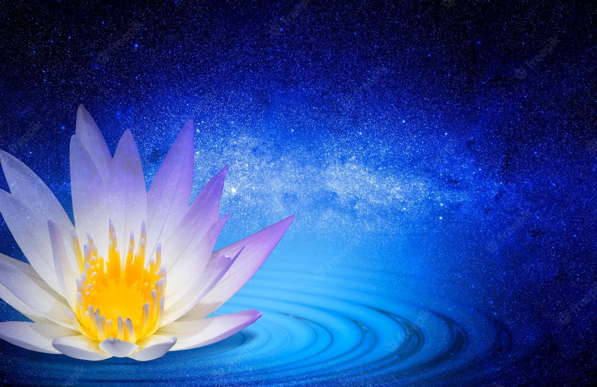
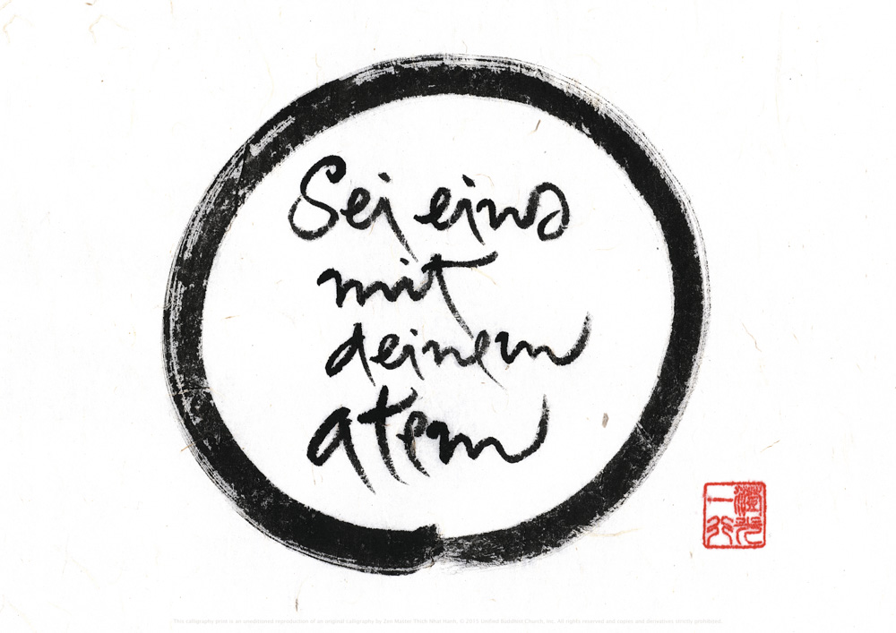
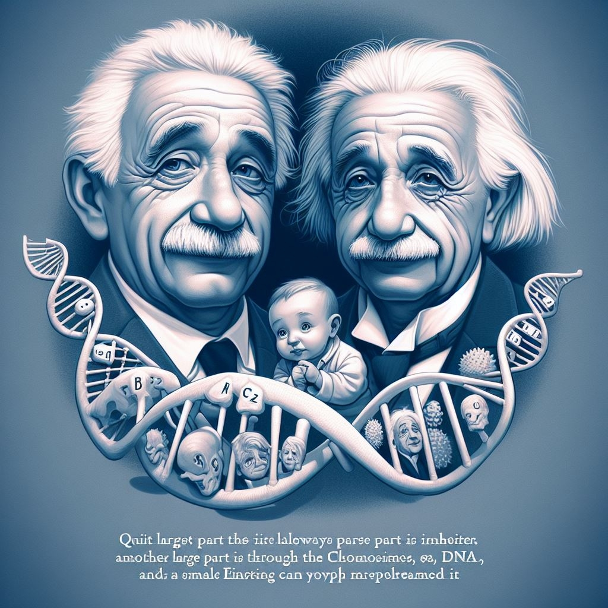
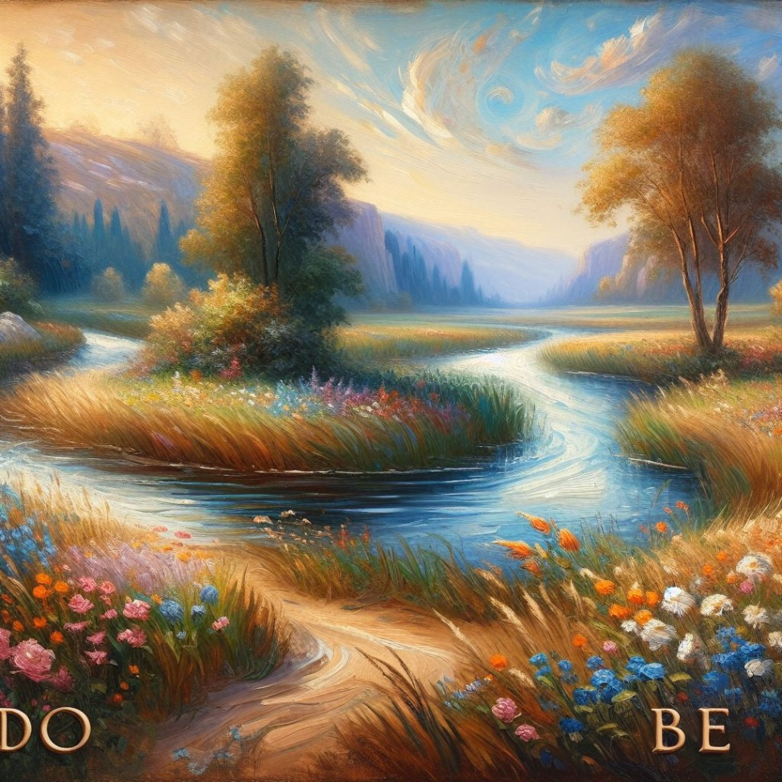
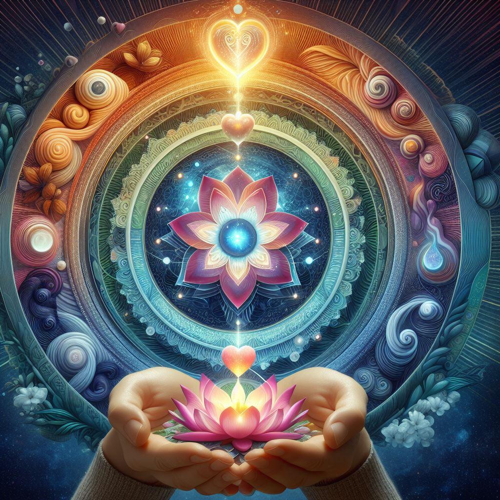
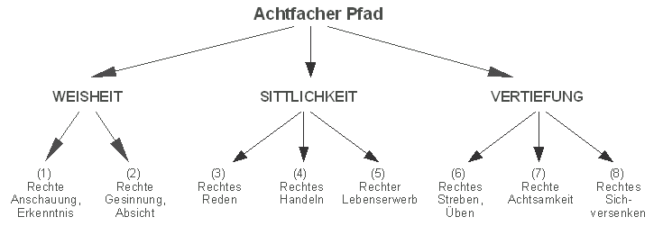

Von Zenjio

Thích Nhất Hạnh
Vorwort.
Dieses Büchlein soll einen allgemeinen Durchblick über Entstehung, Entwicklung, Sinn, Entfaltung und das Ende unseres Daseins vermitteln. Es soll, mit einfacher Logik, Hinweise geben, was Gott, Himmel und Hölle in der heutigen Zeit bedeuten. Der Anfang dieses Buches beschreibt die Zusammenhänge dieser Welt. Das zweite Kapitel handelt von dem Sinn des Lebens. Der Sinn des Lebens ist in der heutigen Zeit schwierig zu definieren, und hängt davon ab, ob man Glauben oder Ideale entwickeln kann. Dieser Artikel soll dazu beitragen, den Zweck in unserer Welt neu zu überdenken. Wir wissen schon ziemlich gut, wie der Mensch entstanden ist, doch nicht warum. Auch dieses Buch kann nicht die absolute Wahrheit geben.
Drum bitte lieber Leser nehmen sie sich aus diesem Buch nur, was sie glauben und als logisch empfinden können und fügen sie dies zu ihrem persönlichen Weltbild hinzu. Es soll auch nicht als Weltverbesserung dienen, sondern lediglich erforschen, ob es einen Sinn hat nach einer gewissen Art und Weise zu leben.
In den Händen halten Sie ein kleines Buch, das, wie ein Leuchtturm in der Dunkelheit, einen klaren Überblick über die Entstehung, Entwicklung, Bedeutung, Entfaltung und das Ende unserer Existenz zu geben versucht. Mit der Einfachheit der Logik strebt es danach, Licht auf die zeitgenössischen Bedeutungen von Gott, Himmel und Hölle zu werfen.
Der Beginn dieses literarischen Werkes webt das komplexe Netz der Zusammenhänge dieser Welt. Das nachfolgende Kapitel taucht in die tiefen Gewässer des Lebenssinns ein. In unserer heutigen Zeit ist es eine Herausforderung, den Sinn des Lebens zu definieren, der stark von unserer Fähigkeit abhängt, Glauben oder Ideale zu entwickeln.
Dieses Manuskript strebt danach, einen Beitrag zur Neubetrachtung unseres Zwecks in dieser Welt zu leisten. Wir haben bereits ein ziemlich gutes Verständnis davon, wie der Mensch entstanden ist, aber das Warum bleibt ein Rätsel. Auch dieses Buch kann nicht die absolute Wahrheit liefern.
Daher, lieber Leser, bitte ich Sie, aus diesem Buch nur das zu entnehmen, was Sie glauben und als logisch empfinden können, und es in Ihr persönliches Weltbild zu integrieren. Es soll nicht als Weltverbesserung dienen, sondern lediglich erforschen, ob es einen Sinn hat, auf eine bestimmte Art und Weise zu leben.
Kapitel 1 - Die Entwicklung.
Entstehung des Alls: (Urknall-Theorie? Vor ca. 15 Milliarden Jahren).
Gehen wir mal davon aus, dass ganz am Anfang, als es noch keine Zeit (im Sinne der uns bekannten Zeit) gab, der Raum nicht vorhanden war. Und plötzlich aus dem Nichts, durch eine noch unerklärliche „Kraft “, entstand das Weltall. Von diesem Augenblick an war alles (Masse! Menge), die bis heute enthalten ist, schon da.
(Rein ne se perd, rein ne crée, tout se transforme.)
(Nichts geht verloren, nichts wird geschaffen, alles wird verwandelt.)
Entstehung des Menschen: (Evolution).
Angenommen, dass alle Elemente, die besser sind, auch länger zusammen halten, als ein jeweils schlechteres Element. So sieht man, dass, sobald sich mehrere Teilchen verbinden, es nur zwei Möglichkeiten gibt, entweder sie gehören zum besseren oder zum schlechteren Teil. Da nun das Bessere wohl auch stärker ist (länger hält) überlebt, wenn es darauf ankommt, nur das bessere Element. Wie ein großes Puzzle in einer Dose, das geschüttelt wird und die passenden Teile “zufälligen” aneinandergeraten, lassen sich jedoch nicht mehr lösen. So geschieht es in der Natur, dass immer die Schwächeren zuerst gefressen werden und dadurch die Spezies sich gesund weiter entfalten kann. Die Dinosaurier sind ausgestorben, weil sie zu schwach waren und die Kälte der Eiszeit nicht standhielten. Deshalb gibt es heute keine Dinosaurier mehr, doch der Mensch konnte sich entwickeln. Es ist also im Laufe der Zeit eine ganz bestimmte Struktur entstanden und alles, was nicht in eine bestimmte Richtung ging, starb aus. Dort wo das Leben eine Nische, eine Lücke fand, sich zu entfalten, tat es das.
? — Urknall ---------- Welt-------- Perfektion.
Der Anfang.
Am Anfang sind aus dem Urknall alle Teilchen durch eine explosionsartige Kraft (Energie) entstanden, fügten sich zusammen zu der Welt, indem immer nur das zum Überleben fähige sich weiter entwickelte und der Rest ausstarb. So wird es weitergehen bis zur absoluten Auflösung oder bis zu einem Teil, der so perfekt ist, dass es sich nicht mehr weiterentwickeln braucht und dann ewig existiert.
Was ist eine Perfektion?
Es kann am Ende nur ein einziges perfektes Teil geben, denn wenn es zwei verschiedene Möglichkeiten gäbe, dann müsste das eine etwas haben, was das andere nicht hat, und somit wäre eins besser als das andere, also perfekter. Und so ist das andere nicht perfekt. Auf unendlich langer Zeit gesehen müssen also alle Partikel oder Teile zu einer einzigen Perfektion gelangen, vorausgesetzt, dass das Universum nie untergeht und dass es immer ein wenig besser wird.
Auf den Mensch bezogen:
Bei den Menschen ist es genau so, letztendlich ist das Gute stärker als das Böse.
(Extrem negativ: Hass = Mord = Tod)
(Extrem Positiv: Liebe = Geburt = Leben)
Also müsste die Menschheit immer besser werden und eines Tages in den „Himmel“ kommen, oder sie wird eines Tages untergehen.
Einfluss auf den Menschen: (Was haben wir davon?).
Unsere Masse, woraus wir bestehen (Teilchen, Atome, Moleküle) sind schon so uralt wie das ganze Universum und auch wenn wir sterben, existiert unsere Masse weiter bis in alle Ewigkeit, wir werden immer ein Teil des Universums sein. So füllt das Leben als Mensch nur eine kleine Zeitspanne der Ewigkeit aus. (Doch trotzdem nehmen wir jede Sekunde bewusst wahr, empfinden sie.

Die Antwort wäre dann wahrscheinlich, Gott braucht keinen bestimmten Grund und keine Rechtfertigung, Gottes Wille ist unergründlich. Mit dieser Antwort kann man sich zufriedengeben oder nicht. In unserem Universum sind mit und mit, seit dem Urknall alle Elemente entstanden, die benötigt werden, um Leben zu erschaffen. Atome formten sich zu Molekülen und diese zu komplexen Strukturen . Irgendwann keiner weiß genau, wie entstand daraus entstehen, zunächst ein Einzeller kann ein Einzeller mit Kern und dann fügen sich die Zellen zusammen zu komplexeren Lebewesen bis schließlich zum Menschen. Die Frage ist wiederum, warum ist das so?
Nun, das Universum hatte viel Zeit, um alles Mögliche auszuprobieren, durch das Prinzip der Kausalität und Evolution, sodass immer das übrig bleibt, was einen besseren Bestand hat und sich besser anpassen kann, sich weiterentwickelt.
Der Mensch hat sich so entwickelt, dass er Intelligenz, Empfinden und Körper für sich verwerten kann. So können wir nach freier Wahl unser Leben so gestalten, wie es uns Menschen möglich ist. Wir können zwischen Gut und Böse, Glück und Elend wählen. Wir können versuchen, das gemeinsame Ziel schneller und besser zu erreichen.
Nach dem Leben:
Wenn wir sterben, zerfällt unser Körper in viele kleine Teile, doch keines davon geht verloren, bald darauf setzen sich Teilchen davon mit anderen zusammen und bilden eine neue Gestalt. Vielleicht entwickelt sich aus diesen Teilchen mit der Zeit ein höher entwickeltes, intelligentes Wesen.
Wo bleibt die Intelligenz? (Die Frage nach dem Geist).
Ganz einfach, der größte Teil wird von uns Menschen immer weitergegeben (gelernt), ein weiterer großer Teil wird durch die Chromosomen (DNS – DNA) vererbt und ein geringer Teil wird vielleicht vergessen. So kommt es, dass das Niveau an Intelligenz der Menschheit ständig wächst. z. B. kann heute schon ein Sechzehnjähriger wissen, was E=m*c² bedeutet, wo Einstein in diesem Alter vielleicht nur davon träumte.

Menschen glauben, dass sie das einzige intelligente Wesen im Universum ist. Sind alle die dies behaupten dumm und blind? Wenn man sieht, welche komplizierten Methoden und Strukturen es in der Pflanzen und Tierwelt gibt (z. B. die Verständigung einer Biene durch ihren Tanz, mit der sie Richtung und Entfernung eines Futterplatzes angibt, eine Arbeiterbiene lebt nur, um andere zu ernähren, zu verteidigen, zu klimatisieren …). So muss man glauben, dass auch Docht ein hohes Maß an Intelligenz existiert, sie ist nur anders einzustufen. Auch Tiere denken und empfinden. Selbst Pflanzen entwickeln komplizierte Techniken zum Überleben und Entfalten, und Steine besitzen chemisch komplizierte Strukturen. Das Weltall ist riesengroß, so groß, dass es Stelle (Welten) in fremden Galaxien gibt, die wir zu Gesicht bekommen werden. Welchen Zweck könnten diese Welten erfüllen, wenn es dort kein Leben gibt?
Alles lebt!?
Könnte man sich nicht die Fragen stellen, ob nicht selbst kleinste Partikel Teil des Lebens sind, denn alles beeinflusst das andere, so wie ein Flügelschlag eines Schmetterlings das Wetter beeinflussen kann? Die Zusammenstellungen mehrerer kleiner Prozesse bilden Leben, Pflanzen, Tiere, Menschen, Welten. Sollte man Leben nicht als ein Ganzes aus mehreren Einzelheiten betrachten? Und somit sagen, dass das ganze Universum lebt.
Die Frage nach dem vorigen und nächsten Leben.
Wenn es wirklich so ist, dass jedes Partikel ein Mindestmaß an Leben ist, dann werden wir immer leben, auch nach unserer jetzigen menschlichen Zeit. Und wir haben schon immer gelebt, nur unter verschiedenen Formen.
Das Individuum (Bewußtsein).
Bei der Geburt eines Menschen fängt er an, sein Bewußtsein zu entwickeln, nach einiger Zeit kann er sagen „ich bin``, nach dem Tod kann er dies nicht mehr sagen. Geht das Bewußtsein und damit seine Individualität verloren??? Ich möchte auf diese Frage im zweiten Kapitel „Der Sinn des Lebens“ zurückkommen.
Bewußtsein.
Mit der Zeit entstand in der Evolution die Möglichkeit, seine Umgebung durch Sinne wahrzunehmen. Diese Sinneswahrnehmung verfeinerte sich und es entstand die Wahrnehmung der Wahrnehmung . Dadurch entstand Bewusstsein. Bewusstsein ist eine logische Folgerung der Wahrnehmung.

Zusammenhänge zweier Leben.
Alles was lebt, kann irgendetwas ausdrücken, nur um dies zu verstehen vermag es komplizierte Zusammenhänge. So ist es manchmal sehr schwer, das Verhalten oder Reagieren eines anderen zu verstehen oder zu akzeptieren. Dennoch speichert das Gehirn eines Menschen Millionen von Informationen über andere Menschen, diese Informationen werden zwar nicht bewusst wahrgenommen, doch dienen sie einem großen Zweck. Der Mensch lernt von anderen, mischt dieses mit eigenen Erfahrungen und gibt dies weiter an andere. Dies würde als eine Art weiter Leben unseres Geistes bezeichnet werden können.
Diese Art Geistesüberlieferung führt zu einem Wachstum des Wissens (Intelligenz) der Menschheit. Also leben unser Körper und unser Geist auch nach dem Tod weiter, vielleicht bis zu dem Zeitpunkt einer totalen Perfektion (Himmel?)
Mann könnten auch spekulieren, ob es nicht eine Art Gedankenübertragung gibt und sich vorstellen, dass im Moment des Todes im Gehirn noch komplizierte Prozesse ablaufen und letzten Gedanken (Wissen, Geist) im Unterbewußtsein andere empfänglichen Menschen (Neugeborenen) übertragen, dies wäre eine andere Möglichkeit des Weiterlebens.
Kapitel 2 - Der Sinn des Lebens.
Der Sinn.
Welches ist der Sinn unseres Lebens, welcher Sinn des Lebens aller Lebewesen überhaupt? Eine Antwort auf diese Frage wissen heißt religiös sein. Du fragst: Hat es überhaupt einen Sinn, diese Frage zu stellen? Ich antworte: Wer sein eigenes Leben und das seiner Mitmenschen als sinnlos empfindet, der ist nicht nur unglücklich, sondern auch kaum lebensfähig. (Albert Einstein)
“Das Ziel aller Menschen ist es, glücklich zu sein.”
Glücklich ist man dann, wenn alle Grundbedürfnisse erfüllt sind.
Es ist ein Bedürfnis der Menschen zu etwas nützlich zu sein (Wertvoll sein), wenn man daran glaubt, dass unser Leben allen weiteren dient und wir selbst sogar daran teilhaben dürfen, dann müsste das doch ein beruhigendes Glücksgefühl bewirken. Ein anderes Bedürfnis ist es, geliebt zu werden. Geliebt wird man nur, wenn man fähig ist, auch andere zu lieben. Der Weg dorthin ist jedoch sehr kompliziert und schwierig und hat damit zu tun, welche Prioritäten und Werte man sich im Leben setzt.

Unsere Zeit.
In der heutigen Zeit wird der Sinn des Lebens oft in die falsche Richtung gesucht. Materielle Habsucht hat unsere Gesellschaft deformiert. Erich Fromm sagte: Es ist nicht wichtig, was man HAT, sondern was man IST. (Haben oder Sein). Wahrhaft zufrieden wird man nur, wenn man seine persönlichen Werte steigert und nicht seinen Besitz. Auch Macht zu haben, kann keine Wertbestätigung oder Liebe ersetzen. Geliebt und bestätigt zu sein, hängt nicht davon ab, was man hat.
Glauben.
Es ist nicht leicht zu glauben, „Sein" sei wichtiger als „Haben”, besonders wenn man glaubt, zu wenig zu besitzen. Einer, der in Armut lebt, hat keine Möglichkeit, sein „sein" zu entfalten. Doch dies trifft für die meisten in unserer westlichen Gesellschaft nicht zu. Würden die Menschen den richtigen Glauben finden, so würden sie merken, dass die „Gesellschaft“ verantwortlich für das „Individuum“ ist und das Glück eines jeden in dem harmonischen Zusammensein mit seinen Mitmenschen liegt (Liebe).
Erleuchtung
Erleuchtung erlangt man am besten während einer Meditation, sie kann aber auch spontan entstehen.

Wenn Körper und Geist sehr entspannt sind, keinen Stress, keine Anspannung, keine Schmerzen, keine Ängste, keine Sorgen und kein Leiden vorhanden sind, dann befindet sich der Geist in einem Zustand, wo erkennen leicht fällt “ Alpha-Zustand * “.
Wenn man genervt oder gestresst ist, ist man nur schwer empfänglich für Liebe. Dies könnte einen biologischen Grund haben.
Auf jeden Fall ist es schwerer, jemanden zu lieben, auf den man wütend ist. Wahre Liebe kennt aber auch da keinen Unterschied. Doch wir sind empfänglicher für positive Überlegungen, wenn wir gelassen sind. Wenn der Geist zur Ruhe kommt, sozusagen frei wird, werden die Gedanken klarer .
Die Philosophen der Antike nannten dies die “Idee des Guten” und glaubten, sie käme von Gott, also diese Idee über alle Werte der Menschen stand, dies war somit ein Beweis, dass es Gott gibt.
Dann kann man aber sagen, dass wenn die Welt in Ordnung ist und im Hier und Jetzt aufhält, es einer gewissen Logik unterliegt, das „Gute“ zu erkennen. Nicht zu verwechseln mit der Unterscheidung zwischen “Gut und Böse”.
Mit „Gute“ meine ich hier das Heilsame, das, was uns und anderen guttut. Man bekommt ein Gefühl der Verbundenheit und Liebe.
*Als Alpha-Zustand wird ein Zustand beschrieben, in dem das Gehirn klar arbeitet und der Geist frei ist. Man kann sich besser auf zu erledigende Aufgaben konzentrieren und effektiver arbeiten.
Liebe.
„Liebe deinen Nächsten wie dich selbst.“ Nur wer aufrichtig liebt und geliebt wird, ist glücklich. Um andere lieben zu können, muss man sich selbst so lieben können wie man ist, was nicht heißt, dass man aufhören soll, sich selbst zu verbessern . Es ist ein Streben der Menschen, sich nach seinen Wertvorstellungen zu vervollkommnen, hierzu ist es wichtig, sich selbst gut kennenzulernen und zu wissen, welche unsere wahren Werte sind. Eine gewisse Selbstkritik kann dabei sehr nützlich sein, doch man sollte sich nicht damit abquälen, sich für andere zu verändern. Wer ständig in Sorge lebt, es den anderen recht zu machen, kann nicht glücklich sein.
Siehe: Wahre Liebe.
Sorge dich nicht, lebe.
Eine positive Einstellung zur Zukunft ist ein guter Weg zum Glück. Die Vergangenheit nachzutrauern heißt, sich der Zukunft zu verschließen. Aus der Vergangenheit sollten wir lernen und uns an das Schöne erinnern und erfreuen. An sich selbst zu glauben, gibt Kraft und erleichtert das Vorhaben.
Kritik
Keiner wird gerne kritisiert, nur wer kritisiert werden möchte, sollte Kritik bekommen.
Kritik kann nur nützlich sein, wenn sie im positiven Sinne angebracht wird. Wer kritisiert, muss auch einen Lösungsvorschlag parat haben. Man braucht sich nur in die Haut des anderen zu versetzen, um zu wissen, wie man sich fühlt (Empathie).
Lob
Erfolgreicher ist der, der andere lobt. An ein Lob erinnert man sich gerne und ist bestrebt, den Lob erbrachten Akt zu wiederholen. Jedoch muss Lob immer aufrichtig, ehrlich, angebracht und umsonst sein.
Die positive Kraft.
Wir können unseren Geist und unseren Körper positiv beeinflussen. Der Mensch denkt und reagiert unter verschiedenen Umständen anders, Gefühle wie Wut, Angst, Glück, Trauer, Hunger ... lassen uns durch produzierte Hormone in der gleichen Situation verschieden reagieren. Wir nehmen vieles unbewusst wahr, Hören, Sehen und Fühlen gehen, ohne dass sie ins Bewußtsein eindringen, dennoch beeinflussen sie uns.
Doch wir selbst haben den größten Einfluss auf unser eigenes Unterbewusstsein. Dies ist jedoch nicht einfach und erfordert Konzentration. Mit Mittel wie Meditation, Yoga, autogenes Training, richtiges Atmen und positives Denken können wir uns stärken und dem Glück einen Schritt näher kommen (Zen).
Zen
Über Zen gibt es einiges zu sagen, Zen ist ein Zustand, in dem man sich eins fühlt mit sich und seiner Umgebung, man kann dieses Gefühl nur schwer beschreiben und man braucht viel Geduld und Übung, um es zu erleben. Während der Zen Meditation genießt man die Nadelspitze des Augenblicks, nur die Sekunde des Jetzt zählt, jedoch ohne dabei Vergangenheit und Zukunft zu verdrängen, man sitzt eigentlich nur da und beobachtet sich, ohne zu denken, man sieht sich Selbst in seiner Umgebung, ohne sich dabei zu beurteilen, weder positiv noch negativ (Neutrum). Körper, Geist und Seele werden getrennt betrachtet und bilden doch eine Ganzheit. Wenn man dies über längere Zeit macht, merkt man, wie man sich dabei verändert. Der Körper weiß ganz genau, was er braucht, man muss nur lernen, ihm zuzuhören.
Die Seele
Die Seele ist das Spiegelbild unserer wahren Werte, man kann lernen, die Seele eines Menschen zu betrachten. Sie ist nicht fassbar, doch immer präsent, doch oft wird sie durch unseren Charakter verschleiert, unsere Bedürfnisse verleiten uns zu Handlungen, die letztendlich nicht das erzielen, was wir uns wünschen.
Wahre Werte.
Man kann sich selbst und andere motivieren, das Richtige zu tun, doch was ist richtig?
Jeder Mensch besitzt innere Werte, doch nur wer offen zu sich selbst sein kann, erkennt, welche seine wahren Werte sind, oft begründen wir unser Tun mit falschen Erklärungen, es erfordert gründliche Überlegungen und uns nach Fragen, warum wir so oder so handeln möchten. Es ist leicht, die Werte der anderen zu verurteilen, doch wir kennen nicht mal unsere eigenen, stattdessen ist es besser , die Werte der anderen kennen und respektieren zu lernen.
Jeder Mensch besitzt in seinem Innerstes das Wissen von Gut und Schlecht, denn dieses Wissen ist eine logische Schlußfolgerung von dem, was unser Körper und Geist braucht. Man findet diese Werte in allen Religionen und Kulturen wieder, sie bilden eine Art weltweites kollektives Unbewußtsein, das jeder in sich trägt. (Prinzip: Idee des “Guten” – Platon)
Glauben und Ideale
Glauben und Ideale bestimmen unsere Werte. Es ist daher sinnvoll, zu erforschen, was wir glauben sollen. Doch sollten wir nicht versuchen, unseren Glauben oder Ideale anderen aufzuzwingen, denn wer kennt schon die absolute Wahrheit. Wir könnten stattdessen andere dazu motivieren, glücklich zu sein.
3 Werte
Es gibt “Haben”, “Tun” und “Sein” Werte.

- Im Leben gibt es Dinge, die konstant und unveränderlich sind, dann gibt es Dinge, die man verändern kann.
Was man nicht ändern kann, sollte man akzeptieren und etwas Positives daraus lernen, denn es ist nun mal so gekommen, es hat sich dazu entwickelt.
- Alles, was wir tun, sollte OK für sich und OK für die anderen sein.
Es geht nicht gut, wenn man leidet, um andere glücklich zu machen.
Es geht auch nicht, wenn man nur nach seinem Glück sieht und andere darunter leiden.
Wir sollten lernen eine assertive Kommunikation zu führen: Reden ohne Aggression, ohne Manipulation und ohne Enthaltsamkeit.
- Was kann ich tun, um den anderen etwas glücklicher zu machen?
Wir können uns für andere interessieren, zuhören und Verständnis aufbringen.
Geben und nehmen. Wer um das Glück anderer bedacht ist, der wird dabei Freude empfinden.
Auch Annehmen will gelernt sein.
Motivation
Wer andere motivieren möchte, sollte dies durch aufrechte Begeisterung tun und selbst von den Werten überzeugt sein, die er vermitteln möchte.
Die Seele lebt ewig
Unsere Körper zerfallen und werden wieder Teil der Materie im Universum.
Unser Geist geht im Bewußtsein und Wissen der andern über.
Doch die Seele ist Teil eines Ganzen, und sie flieht nicht nur nach dem Tod in andere über, sondern immer, wenn wir mit anderen liebevoll in Kontakt treten. Sie ist der wichtigste Teil eines Menschen.
Sie wächst mit unseren Werten und den Werten anderer.
“ Wer anderen ein Lächeln schenk, lebt ewig. “
Himmel
Himmel ist, wenn wir einen Platz in unserem Herzen schaffen für Andere und dort Platz finden bei anderen.
Harmonie
Wenn wir alles, was existiert, respektieren und nicht ohne Sinn zerstören (auch die Gefühle anderer) und wenn wir es schaffen, eine Harmonie zwischen uns und unserer Umgebung zu schaffen, dann hat dies ein Einfluß auf der Zukunft und trägt somit zur Entwicklung des ganzen Universums bei.
Wahre Liebe – Zen (Buddhismus)
Thich Nhat Hanh Zitat über die Liebe
4 Aspekte der wahren Liebe in uns selbst und in allem um uns herum.
1. Liebe (Maitri/Metta) – Wohlwollen (Güte).
Die intensive Absicht und Fähigkeit, Freude, Freundlichkeit und Glück zu schenken.
Siehe: Metta-Meditation.
2. Mitgefühl (Karuna)
Die Absicht und Fähigkeit, Leiden zu lindern und Sorgen zu erleichtern.
3. Freude (Mudita) (Mitfreude)
Wenn Liebe keine Freude bringt, ist es keine wahre Liebe.
4. Gleichmut (Upeksha)
Bezieht sich auf Gelassenheit, Nicht-Anhaftung, Nicht-Unterscheidung oder Loslassen.
Die vier Bedingungen der Liebe sind nicht nur theoretische Konzepte, sondern praktische Übungen, die du in deinem Alltag anwenden kannst. Hier sind einige Vorschläge, wie du das tun kannst:
- Liebende Güte: Dies ist die Fähigkeit, anderen und dir selbst Wohlwollen zu wünschen. Du kannst liebende Güte üben, indem du dir jeden Tag positive Affirmationen sagst, wie z.B. "Ich bin wertvoll", "Ich bin geliebt", "Ich bin glücklich". Du kannst auch anderen Menschen Komplimente machen, ihnen helfen oder ihnen einfach ein Lächeln schenken. Liebende Güte hilft dir, ein freundliches Herz zu entwickeln und die Schönheit in dir und anderen zu sehen.
- Mitgefühl: Dies ist die Fähigkeit, das Leiden anderer und deines eigenen zu erkennen und zu lindern. Du kannst Mitgefühl üben, indem du dich in die Lage anderer versetzt und versuchst, ihre Gefühle und Bedürfnisse zu verstehen. Du kannst auch aktiv nach Wegen suchen, um anderen zu helfen, die in Not sind, sei es durch materielle, emotionale oder spirituelle Unterstützung. Mitgefühl hilft dir, ein offenes Herz zu entwickeln und die Verbundenheit mit allen Wesen zu spüren.
14
- Freude: Dies ist die Fähigkeit, sich über das Glück anderer und deines
Berühre die Erde jedes Mal, wenn du Angst hast.
Berühre sie tief,
und dein Kummer wird dahinschmelzen.
Berühre sie tief,
und du wirst das Unsterbliche berühren.
~Thich Nhat Hanh, Nenn mich bei meinen wahren Namen
“Liebe ist Freude, begleitet von der Vorstellung einer inneren Ursache." – Baruch Spinoza.
Für Spinoza war Liebe nicht nur ein flüchtiges Gefühl, sondern eine tiefere, dauerhafte Emotion, die aus dem Verständnis und der Akzeptanz des anderen entsteht.
Du kannst Freude üben, indem du dich auf die positiven Aspekte deines Lebens konzentrierst und dankbar für alles bist, was du hast. Du kannst auch das Glück anderer feiern, indem du ihnen gratulierst, ihnen Anerkennung schenkst oder dich einfach mit ihnen freust. Freude hilft dir, ein fröhliches Herz zu entwickeln und die Fülle des Lebens zu genießen.
- Gleichmut: Dies ist die Fähigkeit, ruhig und gelassen zu bleiben, egal was passiert. Du kannst Gleichmut üben, indem du dich nicht von deinen Emotionen überwältigen lässt, sondern sie akzeptierst und loslässt. Du kannst auch lernen, die Dinge so zu nehmen, wie sie sind, ohne sie zu bewerten oder zu beurteilen. Gleichmut hilft dir, ein weises Herz zu entwickeln und die Unbeständigkeit des Lebens zu akzeptieren.
Achtsamkeit (Die sieben kostbare Eigenschaften)
Achtsamkeit, Energieeinsatz, Forschergeist, Freude, Sammlung, innere Entspannung und Gelassenheit.
Achtsamkeit ist die erste der sieben kostbaren Eigenschaften
Achtsamkeit ist bewusstes Dasein.
Dasein im Hier und Jetzt. Die Dinge so sehen wie sie sind “so sein”.
“Wenn die Achtsamkeit etwas Schönes berührt, offenbart sie dessen Schönheit.”
„Wenn sie etwas Schmerzvolles berührt, wandelt es sich um und heilt es.”
Thich Nhat Hanh
Kapitel 3 - Achtsamkeit Karma Aura
Wahrnehmung.
Wir nehmen die Welt so wahr, wie wir sie sehen. Das, was wir wahrnehmen, ist ein Bild unserer Imagination. Elektromagnetische Wellen nehmen wir als Licht, Farben, Objekte dar. In Wirklichkeit besteht sie aus kleinsten Partikeln, die man nicht mit bloßem Auge wahrnehmen kann. Alles ist Energie. Erst in unserem Gehirn entstehen die Objekte. Es gibt äußerliche Objekte, die wir sehen können und geistige Objekte (Gefühle), die wir nicht sehen können, dies nehmen wir intuitiv wahr und sie entstehen in unserer Vorstellung. Im Traum sehen wir auch Objekte, sie sind aber nicht real.
‘Kybalion’ – Die 7 hermetischen Gesetze.
- Das Gesetz der Mentalität (Geistigkeit): „Das All ist Geist; das Universum ist geistig.“ Alles ist Geist. Die Quelle des Lebens ist unendlicher Schöpfergeist. Das Universum ist mental. Geist herrscht über Materie. Gedanken erschaffen Realität.
- Das Prinzip der Analogie (Entsprechung): „Wie oben, so unten, wie innen, so außen; wie der Geist, so der Körper“. Die Verhältnisse im Universum (Makrokosmos) entsprechen denen im Individuum (Mikrokosmos) – die äußeren Verhältnisse spiegeln sich im Menschen und umgekehrt. Veränderungen im mikrokosmischem Bereich wirken sich die geistigen Gesetze folglich auch auf die Gesamtheit aus (Magie).
- Das Prinzip der Schwingung: „Nichts ruht; alles ist in Bewegung; alles schwingt (siehe 5.).“
- Das Prinzip der Polarität: „Alles ist zweifach, alles ist polar; alles hat seine zwei Gegensätze; Gleich und Ungleich ist dasselbe. “Gegensätze sind ihrer Natur nach identisch, nur in ihrer Ausprägung verschieden; Extreme begegnen einander; alle Wahrheiten sind nur Halbwahrheiten; alle Paradoxa können in Übereinstimmung gebracht werden.“
- Das Prinzip des Rhythmus: „Alles fließt – aus und ein (siehe 3.); alles hat seine Gezeiten; alles hebt sich und fällt, der Schwung des Pendels äußert sich in allem; der Ausschlag des Pendels nach rechts ist das Maß für den Ausschlag nach links; Rhythmus gleicht aus.“
- Das Prinzip der Kausalität (Ursache und Wirkung): „Jede Ursache hat ihre Wirkung; jedes Phänomen hat seine Ursache; alles geschieht gesetzmäßig; Zufall ist nur ein Begriff für ein unerkanntes Gesetz; es gibt viele Ebenen von Ursachen, aber nichts entgeht dem Gesetz.“
- Das Prinzip des Geschlechts: „Geschlecht ist in allem; alles trägt sein männliches und sein weibliches Prinzip in sich; Geschlecht offenbart sich auf allen Ebenen.“
Die geistigen Gesetze (Kurt Tepperwein)
Die geistigen Gesetze von Kurt Tepperwein sind die Prinzipien, die das Leben und die Schöpfung regeln. Sie basieren auf dem Verständnis, dass alles mit allem verbunden ist und dass wir unser Schicksal selbst gestalten können, indem wir unsere Gedanken, Gefühle und Handlungen bewusst wählen. Tepperwein beschreibt in seinem Buch [Die geistigen Gesetze] solche Gesetze, die er aus verschiedenen spirituellen Traditionen und seiner eigenen Erfahrung als Therapeut und Lehrer zusammengetragen hat.
Die 12 Gesetze sind:
- Das Gesetz der Einheit
- Das Gesetz der Entsprechung
- Das Gesetz der Resonanz
- Das Gesetz der Polarität
- Das Gesetz des Rhythmus
- Das Gesetz von Ursache und Wirkung
- Das Gesetz der Schöpfung
- Das Gesetz der Anziehung
- Das Gesetz der Harmonie
- Das Gesetz der Liebe
- Das Gesetz der Weisheit
- Das Gesetz der Vollkommenheit
Hier ist eine kurze Zusammenfassung der 12 geistigen Gesetze von Kurt Tepperwein:
- Das Gesetz der Einheit: Alles ist eins und eins ist alles. Wir sind Teil der Schöpfung und mit ihr verbunden.
- Das Gesetz der Entsprechung: Wie innen, so außen. Unsere innere Welt spiegelt sich in unserer äußeren Welt wider.
- Das Gesetz der Resonanz: Gleiches zieht Gleiches an. Wir ziehen das an, was wir ausstrahlen.
- Das Gesetz der Polarität: Alles hat zwei Pole, die sich ergänzen. Gegensätze sind nur verschiedene Aspekte derselben Sache.
- Das Gesetz des Rhythmus: Alles schwingt und bewegt sich in Zyklen. Es gibt einen natürlichen Fluss des Lebens, dem wir folgen können.
- Das Gesetz von Ursache und Wirkung: Jede Aktion hat eine Reaktion. Wir ernten, was wir säen.
- Das Gesetz der Schöpfung: Wir sind Schöpfer unserer Realität. Wir gestalten unser Leben durch unsere Gedanken, Gefühle und Handlungen.
- Das Gesetz der Anziehung: Wir ziehen das an, was wir uns wünschen. Wir können unsere Wünsche manifestieren, indem wir uns auf sie fokussieren und ihnen vertrauen.
- Das Gesetz der Harmonie: Alles strebt nach Harmonie und Gleichgewicht. Wir können Harmonie in uns und um uns herum schaffen, indem wir uns mit der Schöpfung in Einklang bringen.
- Das Gesetz der Liebe: Liebe ist die stärkste Kraft im Universum. Liebe ist die Essenz der Schöpfung und unseres wahren Selbst.
- Das Gesetz der Weisheit: Weisheit ist das Wissen um die geistigen Gesetze. Weisheit ist die Anwendung der geistigen Gesetze in unserem Leben.
- Das Gesetz der Vollkommenheit: Alles ist vollkommen, so wie es ist. Wir sind vollkommene Wesen, die sich ständig weiterentwickeln.
Diese Gesetze sollen uns helfen, unser wahres Selbst zu erkennen, unsere Potenziale zu entfalten und ein glückliches und erfülltes Leben in Einklang mit der Schöpfung zu führen. 🙏
Die Gesetze von Kurt Tepperwein etwas ausführlicher. Hier sind einige Beispiele, wie Sie diese Gesetze in Ihrem Leben anwenden können:
- Das Gesetz der Einheit: Erkennen Sie, dass Sie nicht getrennt von der Schöpfung sind, sondern ein Teil von ihr. Fühlen Sie sich mit allem verbunden und respektieren Sie die Vielfalt des Lebens.
- Das Gesetz der Entsprechung: Achten Sie auf Ihre Gedanken, Gefühle und Überzeugungen, denn sie bestimmen Ihre Wirklichkeit. Wenn Sie etwas in Ihrem Leben verändern wollen, müssen Sie zuerst in Ihrem Inneren verändern.
- Das Gesetz der Resonanz: Seien Sie sich bewusst, welche Schwingung Sie aussenden, denn sie zieht ähnliche Schwingungen an. Wenn Sie positive, liebevolle und dankbare Gedanken und Gefühle haben, werden Sie mehr Positives, Liebe und Dankbarkeit in Ihrem Leben erfahren.
- Das Gesetz der Polarität: Akzeptieren Sie, dass alles zwei Seiten hat, die sich gegenseitig bedingen. Nutzen Sie die Polarität als Chance, um zu lernen, zu wachsen und sich zu entwickeln. Finden Sie die Balance zwischen den Gegensätzen und integrieren Sie sie in sich.
- Das Gesetz des Rhythmus: Fließen Sie mit dem natürlichen Rhythmus des Lebens, statt dagegen anzukämpfen. Erkennen Sie die Zyklen von Werden und Vergehen, von Anspannung und Entspannung, von Aktivität und Ruhe. Passen Sie sich den Gegebenheiten an und nutzen Sie die günstigen Zeiten für Ihre Ziele.
- Das Gesetz von Ursache und Wirkung: Übernehmen Sie die Verantwortung für Ihr Leben, denn Sie sind die Ursache für alles, was Ihnen geschieht. Seien Sie sich der Konsequenzen Ihrer Handlungen bewusst und wählen Sie weise. Lernen Sie aus Ihren Fehlern und korrigieren Sie sie.
- Das Gesetz der Schöpfung: Erkennen Sie, dass Sie ein Schöpfer sind, der seine Realität selbst gestaltet. Nutzen Sie Ihre Vorstellungskraft, Ihre Intuition und Ihren Willen, um Ihre Wünsche zu verwirklichen. Seien Sie kreativ, mutig und entschlossen.
- Das Gesetz der Anziehung: Vertrauen Sie darauf, dass Sie das anziehen, was Sie sich wünschen, wenn Sie es klar formulieren, sich darauf fokussieren und es loslassen. Seien Sie offen für die Möglichkeiten, die sich Ihnen bieten, und ergreifen Sie die Chancen, die sich Ihnen zeigen.
- Das Gesetz der Harmonie: Streben Sie nach Harmonie in sich selbst und in Ihrem Umfeld, denn Harmonie ist die Grundlage für Glück und Gesundheit. Lösen Sie Ihre Konflikte friedlich, suchen Sie den Ausgleich zwischen Geben und Nehmen, und fördern Sie die Zusammenarbeit und das Verständnis.
- Das Gesetz der Liebe: Lieben Sie sich selbst und andere bedingungslos, denn Liebe ist die stärkste Kraft im Universum. Liebe ist die Essenz der Schöpfung und unseres wahren Selbst. Liebe heilt, befreit und erfüllt.
- Das Gesetz der Weisheit: Erwerben Sie Weisheit, indem Sie die geistigen Gesetze erkennen, verstehen und integrieren. Weisheit ist das Wissen um die höhere Ordnung und den Sinn des Lebens. Weisheit ist die Anwendung der geistigen Gesetze in Ihrem Leben.
- Das Gesetz der Vollkommenheit: Erkennen Sie, dass alles vollkommen ist, so wie es ist, denn alles dient einem höheren Plan. Erkennen Sie, dass Sie ein vollkommenes Wesen sind, das sich ständig weiterentwickelt. Seien Sie dankbar für alles, was ist, und streben Sie nach dem Besten, was möglich ist.
Afformationen und Affirmationen
Eine Affirmation ist ein positiv formulierter Satz, der exakt das Gegenteil Ihres Glaubens-Satzes ausdrückt. Eine Afformation ist eine positiv formulierte Frage, die auf dem Istzustand basiert und die es Ihrem Unterbewusstsein ermöglicht, eine positive Antwort zu finden
Erfolg, Geld und Wohlstand
Warum bekomme ich von Tag zu Tag mehr Anerkennung für meine Arbeit?
Warum darf mein Leben so erfüllt und reich sein?
Warum bin ich bereit, auf allen Ebenen erfolgreich zu sein?
Warum vertraue ich mehr und mehr auf meine Fähigkeiten?
Warum darf alles, was ich tue, ein Erfolg werden?
Warum darf ich gut darin sein, Erfolg zu erzeugen?
Warum bin ich bereit, dafür gut bezahlt zu werden?
Gesundheit
Warum darf ich meinen Körper lieben?
Warum freue ich mich so sehr darauf, körperlich und geistig gesund zu sein?
Warum achte ich auf mein Denken und wähle bewusst gesunde Gedanken?
Warum erlaube ich mir dankbar für all das Gute in meinem Leben sein?
Partnerschaft und Beziehung
Warum bin ich bereit, harmonische Beziehungen zu führen?
Warum erlaube ich mir, liebevolle und ehrliche Beziehungen zu leben?
Warum freue ich mich so sehr, dass ich meinen Mitmenschen vertraue und warum vertrauen Sie mir?
Warum entscheide ich mich dafür, meine Familie als einen wunderbaren Ort der Kraft zu betrachten?
Liebe und Motivation
Warum erlaube ich meinem Herzen, mir den nächsten Schritt aufzuzeigen?
Warum genieße ich es so sehr, jeden Tag Liebe zu geben und zu empfangen?
Warum darf Liebe mich erfüllen und von mir ausstrahlen?
Warum bin ich wertvoll?
Warum fühle ich mich jeden Tag mehr inspiriert und so voller Energie?
Warum entscheide ich mich dafür, dass ich in Fülle leben kann?
Achtsamkeit – Gefühle
Der Buddha hat im Satipatthana Sutta die „vier Grundlagen der Achtsamkeit“ gelehrt.
Diese 4 Grundlagen der Achtsamkeit sind:
1. Achtsamkeit auf den ganzen Körper
2. Achtsamkeit auf die Gefühle/Empfindungen (Hier spielt die Bewertung eine Rolle. Positiv, negativ oder neutral)
3. Achtsamkeit auf den Geist (oder Gedanken)
4. Achtsamkeit auf die Geistesobjekte (oder Gedanken-Formationen/Muster: Objekte und Dinge, die im Moment wahrgenommen werden).

Ego, Karma und Charisma.
Das Ego steht in einer engen Verbindung mit Karma und Charisma. Karma ist der Begriff für die Gesetzmäßigkeit des Ursache-Wirkungs-Zusammenhangs. Es besagt, dass jede Handlung eine Folge hat, sowohl positive als auch negative. Charisma hingegen ist die Fähigkeit, andere Menschen zu beeindrucken und zu begeistern.
Das Ego kann eine positive oder negative Rolle im Zusammenhang mit Karma und Charisma spielen. Ein gesundes Ego kann uns dazu motivieren, positive Handlungen zu unternehmen, die zu positiven Folgen führen. Ein negatives Ego hingegen kann uns dazu führen, negative Handlungen zu unternehmen, die zu negativen Folgen führen.
In Bezug auf Charisma kann ein Ego dazu beitragen, dass wir charismatischer wirken. Wenn wir uns selbstsicher und selbstbewusst sind, sind wir auch eher in der Lage, andere Menschen zu beeinflussen. Ein negatives Ego hingegen kann uns unsympathisch und arrogant wirken lassen.
Hier sind einige konkrete Beispiele für die Verbindungen zwischen Ego, Karma und Charisma:
Eine Person mit einem gesunden Ego ist eher dazu bereit, anderen zu helfen, auch wenn es bedeutet, dass sie selbst dabei etwas zurückstecken muss. Diese Handlungen führen zu positiven Folgen, wie zum Beispiel mehr Zufriedenheit und Glück.
Eine Person mit einem negativen Ego ist eher dazu bereit, andere zu manipulieren und auszunutzen, um ihre eigenen Ziele zu erreichen. Diese Handlungen führen zu negativen Folgen, wie zum Beispiel Streit, Konflikte und Verrat.
Eine Person mit einem gesunden Ego ist eher in der Lage, ihre Fähigkeiten und Talente zu entfalten. Diese Fähigkeiten und Talente können dazu beitragen, dass die Person anderen Menschen hilft oder sie inspiriert.
Eine Person mit einem negativen Ego ist eher in der Lage, anderen Menschen zu schaden oder sie zu unterdrücken. Diese Handlungen können dazu führen, dass die Person selbst isoliert und einsam wird.
Letztendlich hängt es von jedem Einzelnen ab, wie er sein Ego einsetzt. Ein gesundes Ego kann uns zu positivem Handeln motivieren und uns dabei helfen, unsere Ziele zu erreichen. Ein negatives Ego hingegen kann uns zu negativem Handeln verleiten und uns daran hindern, unser volles Potenzial zu entfalten.

Innerer Frieden
Innerer Frieden bedeutet, in Harmonie mit sich selbst und dem Umfeld zu sein. Er legt demnach den Grundstein dafür, das Leben mit all seinen Facetten anzunehmen – was in absoluter geistiger Freiheit, Gelassenheit, Ruhe und einem von den äußeren Ereignissen unabhängigen Glücksgefühl resultiert¹.
Es gibt viele Wege, wie du inneren Frieden finden kannst. Hier sind einige Tipps, die dir helfen können:
- Vergleiche dich nicht ständig mit anderen, sondern schätze deine Stärken, Fähigkeiten und Erfolge.
- Lebe in der Gegenwart und genieße den Moment, ohne dich von der Vergangenheit oder der Zukunft ablenken zu lassen.
- Lasse Verärgerung und Ressentiments los und vergebe dir selbst und anderen.
- Halte deine Gefühle aus und nimm sie an, ohne sie zu unterdrücken oder zu vermeiden.
- Sei dir deines zwanghaften Kontrollbedürfnisses bewusst und lerne, loszulassen und zu vertrauen.
- Begrüße es, unsympathisch zu sein und akzeptiere, dass du nicht jedem gefallen kannst³.
- Lenke deine Aufmerksamkeit bewusst auf das Positive und übe Dankbarkeit¹.
- Meditiere regelmäßig, um deinen Geist zu beruhigen und zu klären.
- Pflege deine Beziehungen zu Menschen, die dir guttun und dich unterstützen.
- Kümmere dich um deinen Körper, indem du dich gesund ernährst, ausreichend schläfst und dich bewegst.
- Finde deine Leidenschaft und folge deiner inneren Führung.
- Sei im Einklang mit deiner Seele und deinem inneren Selbst.
INTERSEIN
Intersein ist ein Konzept, das von dem vietnamesischen Zen-Meister Thich Nhat Hanh gelehrt wird. Es bedeutet, dass alles miteinander verbunden ist und voneinander abhängt. Nichts existiert unabhängig von allem anderen. Wir sind alle Teil eines großen Netzwerks des Lebens.
Eine Meditation über Intersein kann dir helfen, diese tiefe Wahrheit zu erkennen und zu erfahren. Hier ist eine mögliche Anleitung für eine solche Meditation:
Setze dich bequem hin und schließe deine Augen. Atme tief ein und aus und entspanne deinen Körper und deinen Geist.
Denke an einen Gegenstand, den du in deiner Nähe hast, zum Beispiel eine Tasse, ein Buch oder eine Blume. Nimm dir einen Moment Zeit, um diesen Gegenstand zu betrachten und zu schätzen.
Stelle dir nun vor, wie dieser Gegenstand entstanden ist. Was waren die Bedingungen, die ihn möglich gemacht haben? Wer hat ihn hergestellt oder gepflanzt? Woher kamen die Materialien oder Samen? Wie sind sie transportiert worden?
Erweitere deine Vorstellungskraft und versuche, alle Elemente zu sehen, die in diesem Gegenstand enthalten sind: die Sonne, die Erde, das Wasser, die Luft, die Wolken, der Wind, die Menschen, die Tiere, die Pflanzen, die Zeit, der Raum …
Erkenne, dass dieser Gegenstand nicht nur aus sich selbst besteht, sondern aus dem ganzen Universum. Erkenne, dass er ohne all diese Elemente nicht existieren könnte. Erkenne, dass er Intersein ist.
Fühle dich dankbar für diesen Gegenstand und für alles, was ihn hervorgebracht hat. Fühle dich verbunden mit allem, was ist. Fühle dich eins mit allem, was ist.
Wiederhole diesen Prozess mit einem anderen Gegenstand oder einer anderen Person in deiner Nähe. Oder wähle etwas aus der Natur oder aus deinem eigenen Körper aus. Versuche, das Intersein in allem zu sehen und zu spüren.
Beende deine Meditation mit einem Lächeln und einem tiefen Atemzug. Öffne deine Augen und schaue dich um. Nimm wahr, wie alles lebendig und wunderbar ist. Nimm wahr, wie du lebendig und wunderbar bist.
Ich wünsche dir viel Frieden und Freude in deinem Leben. 🙏
INTERSEIN
Goldene Regel:
„Behandle jedermann so, wie du selbst an seiner Stelle wünschtest behandelt zu werden.“
“Behandele dich selbst so gut, wie du einen guten Freund oder eine gute Freundin behandeln würdest”
Wer sind wir?
Sind wir unser Körper oder ein Teil davon?
Wenn wir uns klonen, lebt unser Klon als uns weiter . So wie ein Ableger einer Pflanze als ganze Pflanze weiterleben. Sind wir unser Gedanken oder mehr? Sind wir unsere Gefühle oder unsere Sinne?
Sind wir unser Geist. Was ist Geist?
Geist ist die Summe aller Informationen, die wir in uns tragen und erfahren können. Unsere Informationen entstehen durch Beobachtung . Sind wir der Beobachter , aber was ist der Beobachter ohne das beobachtete . Subjekt und Objekt . Es gibt innere und äußere Objekte . Man kann Objekt und Subjekt nicht voneinander trennen , kein Beobachter keine Beobachtung, kein Objekt kein Subjekt, kein Subjekt kein Objekt.
Sind wir denn eins mit allem oder sind wir ein Individuum oder beides?
Das, was wir sind, entsteht aus unserem Geist, doch der Geist entsteht aus das, was wir beobachten. Das, was wir beobachten, entsteht aus einer Summe von Kausalität. Und diese wiederum aus eine weitere Vielfalt von Kausalität. Bis hin zum ganzen Universum.
Sind wir das Universum? Ursache und Wirkung. Chaos und Ordnung.
Würde auch nur ein Glied in der Kette der Kausalität fehlen. Dann wäre die Kette unterbrochen und somit auch deren Wirkung. Würden wir dann noch existieren, so wie wir sind. Sind wir die Summe von allem, was existiert?
Existieren wir weiter in allem, was uns umgibt? Sind wir somit ewig?


Verantwortung und Sinn.
WER IST SCHULD?
“ Schuld ist immer eine kollektive Frage. “
“Verantwortung, ist eine persönliche Sache.”
Der Unterschied zwischen Schuld und Verantwortung ist nicht immer leicht zu erkennen, aber er hat einen großen Einfluss auf unser Leben. Schuld ist ein Gefühl, das wir haben, wenn wir glauben, etwas falsch gemacht zu haben oder jemandem geschadet zu haben. Verantwortung ist die Bereitschaft, die Folgen unserer Handlungen zu akzeptieren und zu korrigieren. Schuld kann uns lähmen, uns ein schlechtes Gewissen machen und uns in die Opferrolle drängen. Verantwortung kann uns motivieren, zu lernen, zu wachsen und uns zu verbessern.
Schuld ist auf die Vergangenheit gerichtet und kann uns daran hindern, die Gegenwart und die Zukunft zu gestalten.
In beiden Fällen ist
Verantwortung hingegen ist auf die Zukunft gerichtet und ermöglicht uns, wahre Freiheit zu erleben³. Verantwortung bedeutet nicht, dass wir uns schuldig fühlen müssen, sondern dass wir erkennen, dass wir die Macht haben, etwas zu verändern. Verantwortung ist eine aktive Wahl, die uns erlaubt, aus unseren Fehlern zu lernen und uns weiterzuentwickeln.
Die buddhistische Psychologie ist eine nicht-westliche Ausrichtung von Therapie, die sich vor allem auf Meditation stützt und auf der Annahme von mehr als 50 »mentalen Faktoren« beruht. Diese mentalen Faktoren sind Eigenschaften der Psyche, die das Verhältnis zwischen dem Bewusstsein und dem Objekt des Bewusstseins bestimmen. Die buddhistische Psychologie basiert auf vier edelmütigen Wahrheiten, die das menschliche Leiden und seinen Ursprung erklären, sowie auf dem edlen achtfachen Pfad, der eine Anleitung zur Befreiung vom Leiden bietet. Die buddhistische Psychologie bietet eine tiefgründige und praktische Herangehensweise an das Verständnis des Geistes und der menschlichen Erfahrung³. Durch die Anwendung ihrer Lehren können wir inneren Frieden finden, persönliches Wachstum fördern und ein erfülltes Leben führen. 🙏
Es gibt verschiedene Möglichkeiten, wie Sie buddhistische Psychologie in Ihrem Leben anwenden können. Hier sind einige Beispiele:
- Praktizieren Sie regelmäßig Meditation und Achtsamkeit, um Ihren Geist zu beruhigen, Ihre Aufmerksamkeit zu schärfen und Ihre Emotionen zu regulieren. Sie können verschiedene Arten von Meditation ausprobieren, wie z.B. Atemmeditation, Metta-Meditation oder Vipassana-Meditation.
- Entwickeln Sie Mitgefühl für sich selbst und andere, indem Sie sich bewusst machen, dass alle Lebewesen Leiden erfahren und Glück suchen. Sie können Mitgefühl üben, indem Sie sich selbst und anderen freundliche Worte, Gesten oder Taten anbieten.
- Erkennen Sie die Unbeständigkeit aller Dinge an und vermeiden Sie Anhaftung an Vergängliches. Sie können dies tun, indem Sie sich daran erinnern, dass alles im Leben einer Veränderung unterworfen ist und dass nichts dauerhaft oder unveränderlich ist.
- Lösen Sie sich von dem Konzept eines festen Selbst und erkennen Sie, dass Ihre Identität das Ergebnis von Bedingungen und Prozessen ist. Sie können dies tun, indem Sie sich Ihrer Gedanken, Gefühle und Handlungen bewusst werden und sie nicht als „Ihr“ betrachten, sondern als vorübergehende Phänomene.
- Folgen Sie dem edlen achtfachen Pfad, der eine Anleitung zur Befreiung vom Leiden bietet. Der Pfad besteht aus acht Aspekten: rechte Ansicht, rechte Absicht, rechte Rede, rechtes Handeln, rechter Lebenserwerb, rechte Anstrengung, rechte Achtsamkeit und rechte Konzentration.
Der Unterschied zwischen buddhistischer Psychologie und westlicher Psychologie liegt vor allem in der Rolle und dem Verständnis des Ichs. Während die westliche Psychologie die Stärkung des Ichs als Ziel der Therapie sieht, zielt die buddhistische Psychologie auf die Durchschauung und Überwindung des Ichs als Quelle des Leidens ab. Die westliche Psychologie basiert auf empirischen Methoden und objektiven Kriterien, die buddhistische Psychologie betont die Erforschung und Schulung des Geistes und die persönliche Erfahrung. Die westliche Psychologie bietet verschiedene Therapieformen an, die sich auf unterschiedliche Aspekte der Psyche konzentrieren, die buddhistische Psychologie folgt einem einheitlichen Weg, der auf den vier edlen Wahrheiten und dem achtfachen Pfad beruht. Die westliche Psychologie und die buddhistische Psychologie können sich jedoch auch ergänzen und voneinander lernen, um den Menschen auf seinem Weg der Heilung zu unterstützen⁴.
„Wenn der Geist still ist, kann sich das Herz öffnen.“
Buddhistische Psychologie ist eine Form der Psychologie, die sich auf die Lehren und Praktiken des Buddhismus stützt. Sie zielt darauf ab, das Leiden zu verringern und das Wohlbefinden zu fördern, indem sie die Rolle des Geistes, der Emotionen und der Meditation untersucht. Buddhistische Psychologie hat viele Gemeinsamkeiten mit westlichen psychologischen Ansätzen, aber auch einige Unterschiede, wie z. B. die Betonung von Achtsamkeit, Mitgefühl und Erleuchtung.
Die buddhistische Psychologie ist eine nicht-westliche Ausrichtung von Therapie, die sich vor allem auf Meditation stützt und auf der Annahme von mehr als 50 „mentalen Faktoren“ beruht¹. Sie lehrt, dass das Leiden durch unsere Anhaftung an Vergängliches, unsere Unwissenheit und unsere ungesunde geistige Einstellung entsteht. Durch Achtsamkeit und Selbsterkenntnis können wir den Ursachen des Leidens entgegenwirken und persönliches Wachstum erreichen². Die buddhistische Psychologie betont die Bedeutung von Mitgefühl gegenüber uns selbst und anderen, sowie die Akzeptanz der Unbeständigkeit aller Dinge³. Sie bietet eine tiefgründige und praktische Herangehensweise an das Verständnis des Geistes und der menschlichen Erfahrung. Überleben im Hier und Jetzt bedeutet, gegenwärtig und bewusst im Moment zu sein, ohne sich von unseren Gedanken und Gefühlen mitreißen zu lassen. Es bedeutet auch, liebevolle Güte und Mitgefühl in unseren Handlungen und Gedanken zu kultivieren und ein Gefühl der Verbundenheit mit allen Lebewesen zu fördern. Die buddhistische Psychologie kann uns helfen, inneren Frieden zu finden, persönliches Wachstum zu fördern und ein erfülltes Leben zu führen. 🙏
Die über 50 mentalen Faktoren sind Eigenschaften des Geistes, die das Verhältnis zwischen dem Bewusstsein und seinem Objekt bestimmen¹. Sie werden in fünf Gruppen eingeteilt²:
- Die fünf allgegenwärtigen mentalen Faktoren: Gefühl, Unterscheidung, Absicht, Kontakt und Aufmerksamkeit. Diese sind immer mit jedem Bewusstseinsmoment verbunden.
- Die fünf objektbestimmenden mentalen Faktoren: Aspiration, Glaube, Achtsamkeit, Konzentration und Weisheit. Diese sind für die Erkenntnis eines bestimmten Objekts notwendig.
- Die elf tugendhaften mentalen Faktoren: Nicht-Anhaftung, Nicht-Aversion, Nicht-Unwissenheit, Nicht-Gewalt, Nicht-Lüge, Nicht-Diebstahl, Nicht-Sexuelle-Missbrauch, Nicht-Beneidung, Nicht-Stolz, Nicht-Böswilligkeit und Rücksichtnahme. Diese sind für die Entwicklung von positiven Geisteszuständen förderlich.
- Die sechs primären leidvollen mentalen Faktoren: Anhaftung, Aversion, Unwissenheit, Stolz, Zweifel und falsche Ansichten. Diese sind die Hauptursachen für das Leiden.
- Die zwanzig sekundären leidvollen mentalen Faktoren: Zorn, Hass, Neid, Eifersucht, Geiz, Geiz, Heuchelei, Arroganz, Betrug, Schamlosigkeit, Unverschämtheit, Faulheit, Trägheit, Vergesslichkeit, Zerstreutheit, Unachtsamkeit, Nicht-Unterscheidung, Reue, Schlaf und Verwirrung. Diese sind die Folgen oder Verstärker der primären leidvollen mentalen Faktoren.
Achtsamkeit und Aspiration.
Achtsamkeit ist ein zentrales Konzept in der buddhistischen Psychologie, das die Fähigkeit beschreibt, sich bewusst und ohne zu urteilen, auf den gegenwärtigen Moment zu konzentrieren¹. Achtsamkeit soll den Geist klären, das Leiden verringern und die spirituelle Entwicklung fördern. Achtsamkeit kann durch verschiedene Praktiken wie Meditation, Atemübungen oder achtsames Gehen trainiert werden³. Achtsamkeit hat auch positive Auswirkungen auf die psychische Gesundheit, wie zum Beispiel die Reduktion von Stress, Angst und Depression⁴. Achtsamkeit ist also eine wertvolle Fähigkeit, die uns hilft, unser Leben bewusster und glücklicher zu gestalten. 🌸
Aspiration hat mehrere Bedeutungen, je nach Kontext. Im Allgemeinen bedeutet es eine starke Hoffnung oder einen ehrgeizigen Plan, etwas zu erreichen1. In der buddhistischen Psychologie bezeichnet Aspiration die geistige Haltung, die sich nach einem bestimmten Objekt oder Ziel sehnt.
Die buddhistische Psychologie lehrt, wie man die leidvollen mentalen Faktoren erkennt und reduziert und wie man die tugendhaften mentalen Faktoren kultiviert und verstärkt, um den Geist zu klären und zu beruhigen.
**Speicherbewusstsein**
Die buddhistische Psychologie beschreibt das Unterbewusstsein als das **Speicherbewusstsein**, das alle Informationen und Erfahrungen aufnimmt, aufbewahrt und wieder hervorbringt¹. Das Speicherbewusstsein enthält auch die **Samen** oder **Potenziale** für alle mentalen Faktoren, die das Bewusstsein beeinflussen, wie z. B. Gefühle, Wahrnehmungen, Willen, Aufmerksamkeit, etc. Das Speicherbewusstsein ist die grundlegendste Form des Bewusstseins und kann ungefähr mit dem **Unbewussten** in der westlichen Psychologie verglichen werden².
Einige der wichtigsten Konzepte der buddhistischen Psychologie sind:
- Die vier edlen Wahrheiten: Sie beschreiben die Existenz, die Ursache, die Beendigung und den Weg des Leidens².
- Der edle achtfache Pfad: Er ist ein Leitfaden für ethisches Verhalten, geistige Disziplin und Weisheit, der zur Befreiung vom Leiden führt².
- Die fünf Aggregate: Sie sind die Bestandteile der Persönlichkeit, die aus Form, Empfindung, Wahrnehmung, geistigen Formationen und Bewusstsein bestehen¹.
- Das Gesetz des Karma: Es besagt, dass jede Handlung eine Folge hat, die sich auf das gegenwärtige oder zukünftige Leben auswirkt¹.
- Die Wiedergeburt: Sie ist der fortwährende Zyklus von Geburt, Tod und Wiedergeburt, der vom Karma bestimmt wird.
Buddhistische Psychologie bietet verschiedene Methoden an, um den Geist zu schulen und zu transformieren, wie z. B.:
- Meditation: Sie ist eine Praxis, die die Aufmerksamkeit auf den gegenwärtigen Moment lenkt und die geistige Klarheit, Ruhe und Einsicht fördert.
- Achtsamkeit: Sie ist eine Haltung der Offenheit, Neugier und Akzeptanz gegenüber den eigenen Erfahrungen, ohne sie zu beurteilen oder zu vermeiden.
- Mitgefühl: Es ist ein Gefühl der Verbundenheit und des Wohlwollens gegenüber sich selbst und anderen, das das Leiden lindert und die Freude erhöht¹².
- Weisheit: Sie ist das Verständnis der wahren Natur der Realität, die als leer, vergänglich und abhängig von Bedingungen angesehen wird.
Buddhistische Psychologie kann Menschen helfen, ihre psychische Gesundheit zu verbessern, indem sie ihnen hilft, ihre negativen Emotionen zu regulieren, ihre Resilienz zu stärken, ihre Beziehungen zu verbessern und ihren Sinn und Zweck im Leben zu finden.
Loslassens nach TNH
Tich Nath Hanh ist ein vietnamesischer buddhistischer Mönch, Schriftsteller und Lyriker, der die Kunst des Loslassens lehrt. Er erklärt, dass Loslassen nicht bedeutet, sich von anderen zu distanzieren oder seine Gefühle zu unterdrücken, sondern vielmehr, vollständiger und bedingungsloser zu lieben. Er sagt, dass Loslassen uns Freiheit gibt, und Freiheit ist die einzige Bedingung für Glück.
Er beschreibt vier Formen des Loslassens, die er als die vier unermesslichen Geisteshaltungen bezeichnet: Maitri (liebevolle Güte), Karuna (Mitgefühl), Mudita (freudiges Mitgefühl) und Upeksha (Gleichmut). Diese sind nicht nur Gefühle, sondern auch Praktiken, die wir durch Achtsamkeit entwickeln können. Achtsamkeit bedeutet, unsere Aufmerksamkeit auf den gegenwärtigen Moment zu richten, ohne zu urteilen oder zu reagieren. Durch Achtsamkeit können wir unser Leiden erkennen und loslassen, indem wir es mit einem Lächeln annehmen.
Er gibt uns auch einige einfache Übungen, um das Loslassen zu üben, wie zum Beispiel das bewusste Atmen, das Gehen und das Lächeln. Er sagt, dass wir beim Einatmen sagen können: „Ich bin angekommen", und beim Ausatmen: ‚Ich bin zu Hause‘. Das bedeutet, dass wir uns in unserem Körper und in unserer Umgebung wohlfühlen und nichts anderes brauchen. Er sagt auch, dass wir beim Gehen so gehen sollen, als würden wir die Erde mit unseren Füßen küssen². Das bedeutet, dass wir dankbar für das Leben sind und uns mit allem verbunden fühlen. Er sagt auch, dass wir immer ein Halblächeln auf unserem Gesicht halten sollen³. Das bedeutet, dass wir unsere Freude und Ruhe ausdrücken und unsere Anspannungen lösen.
Für Tich Nath Hanh ist Loslassen also eine Kunst, die wir lernen und üben können, um glücklicher und freier zu sein. Er sagt: "Loslassen gibt uns Freiheit, und Freiheit ist die einzige Bedingung für Glück. Wenn wir uns in unserem Herzen immer noch an etwas klammern – an Ärger, Angstzustände oder Besitz – können wir nicht frei sein."
Er würde vielleicht noch sagen, dass Loslassen nicht bedeutet, sich von allem zu trennen, was uns wichtig ist, sondern vielmehr, die Dinge so zu sehen, wie sie wirklich sind: vergänglich, bedingt und nicht selbstständig. Er würde uns ermutigen, die Vergangenheit und die Zukunft loszulassen und im gegenwärtigen Moment zu leben, wo wir Frieden und Freude finden können. Er würde uns auch lehren, wie wir unsere Anhaftungen an unsere Vorstellungen, Meinungen und Konzepte loslassen können, die oft die Ursache für unser Leiden sind. Er würde uns sagen, dass wir offen und bereit sein müssen, neue Perspektiven zu lernen und zu verstehen.
Er würde auch uns sagen, dass wir uns nicht mit anderen vergleichen oder von ihnen abhängig machen sollen, sondern unsere eigene Schönheit und Einzigartigkeit erkennen sollen
Kapitel 5 - Meditation
Meditation
Ruhe, schwere, Wärme.
Es atmet in mir.
Ich atme ein, ich atme aus.
Meine Nase ist frei.
Meine Nasennebenhöhle ist frei.
Meine Augen sind entspannend.
Meine Stirnhöhlen sind frei.
Meine Stirn ist kühl.
Meine Schläfen sind entspannt.
Meine Wangen sind entspannt.
Meine Lippen sind entspannt.
Meine Zunge ist entspannt.
Mein Nasenraum ist frei.
Mein Rachen ist frei.
Mein Hals ist entspannt.
Meine Schilddrüse ist in Ordnung.
Meine Luftröhre ist frei.
Lunge. Zwerchfell. Magen. Dünndarm.
Dickdarm. Becken. Oberschenkel.
Knie. Schienbein. Fuß. Zehen.
Ruhe, Schwere, Wärme, es atmet in mir. Meine Nase ist frei. Meine Stirn ist kühl.
Schädel. Nacken. Schulter. Arme. Hände.
Handfläche „Chakra“.
Wirbelsäule.
Jeder einzelne Wirbel von Kopf bis zum Steißbein.
Achtsamkeit des Atmens
In dem Anapanasati Sutta beschreibt der Buddha die Praxis der Achtsamkeit. Der zweite Teil behandelt die 4 x
4 = 16 Methoden des bewussten Atmens
1. die Achtsamkeit auf den Atem und den Körper
2. die Achtsamkeit auf die Gefühle/Empfindungen
3. die Achtsamkeit auf den Geist (dessen Zustand)
4. die Achtsamkeit auf die Geistesobjekte (alles, was wahrgenommen wird).
Sutra des bewussten Atmens (Anapanasati Sutta, Hrsg. Thich Nhat Hanh)
Achtsamkeit des Atems (1–4)
1) Ich atme ein und weiß, dass ich einatme.
Ich atme aus und weiß, dass ich ausatme.
2) Ich atme ein und bin mir der Länge der Einatmung bewusst.
Ich atme aus und bin mir der Länge der Ausatmung bewusst.
Achtsamkeit des Körpers
3) Ich atme ein und nehme meinen ganzen Körper bewusst wahr.
Ich atme aus und nehme meinen ganzen Körper bewusst wahr.
4) Ich atme ein und entspanne und beruhige meinen ganzen Körper.
Ich atme aus und entspanne und beruhige meinen ganzen Körper.
Achtsamkeit der Empfindungen (angenehme, unangenehme, neutrale)
5) Ich atme ein und empfinde Freude.
Ich atme aus und empfinde Freude.
6) Ich atme ein und empfinde Glück.
Ich atme aus und empfinde Glück.
7) Ich atme ein und nehme die Aktivitäten meines Geistes bewusst wahr.
Ich atme aus und nehme die Aktivitäten meines Geistes bewusst wahr.
8) Ich atme ein und entspanne und beruhige die Aktivitäten meines Geistes.
Achtsamkeit der Kontrolle und Befreiung des Geistes
9) Ich atme ein und nehme meinen Geist bewusst wahr.
Ich atme aus und nehme meinen Geist bewusst wahr.
10) Ich atme ein und mache meinen Geist glücklich und friedvoll.
Ich atme aus und mache meinen Geist glücklich und friedvoll.
11) Ich atme ein und konzentriere meinen Geist.
Ich atme aus und konzentriere meinen Geist.
12) Ich atme ein und befreie meinen Geist.
Ich atme aus und befreie meinen Geist.
Achtsamkeit, um Licht auf die wahre Natur aller Dinge zu werfen
13) Ich atme ein und beobachte die vergängliche Natur aller Dinge.
Ich atme aus und beobachte die vergängliche Natur aller Dinge.
14) Ich atme ein und beobachte das Verblassen aller Dinge.
Ich atme aus und beobachte das Verblassen aller Dinge.
15) Ich atme ein und beobachte die Befreiung. (Freude der Emanzipation)
Ich atme aus und beobachte die Befreiung.
16) Ich atme ein und beobachte das Loslassen.
Ich atme aus und beobachte das Loslassen.
Zur Vertiefung empfohlen:
Thich Nhat Hanh
Das Wunder des bewussten Atmens, Bielefeld: Theseus Verlag 2000
Ven. Bhante Vimalaramsi
Das Anapanasati-Sutta – Ein praktischer Wegweiser zur Achtsamkeit auf die Atmung und ruhiger Weisheit-Meditation (Übersetzung: Ronald Brudler)
Meditationsarten
Es gibt verschiedene Meditationsarten.
Die wohl wichtigste Meditation ist die Meditation der 16 Atemübungen des Buddhas, doch es gibt noch viele andere Arten.
Hier möchte ich alle Arten, die ich kenne, aufzählen.
- 16 Arten Übungen des Buddhas
- Die vier Grundübungen des Autogentrainings
- Die weiterführenden Übungen des autogenen Trainings.
- Die sieben Punkte Meditation
- Die 28 Chakrenmeditation.
- Das Buddyscanning
- Die Reiki-Meditation.
- Mantra Meditation.
- Afformationen und Affirmationen.
- Die doppelte Afformation.
- Geführte Meditationen mit Musik
- Geführte Meditationen ohne Musik
- AUDIOCAMENT.
- Shambala und Nirwana MEDITATION.
- Autohypnose. 10 9 8 7 ... 0
- Das Klarträumen (Tagträumen).
- Rückzugsort Meditation.
- Aura Meditation.
- Astralreisen.
- Multiple Astralreisen.
- Zähl Meditation.
- Achtsamkeitsmeditation.
- Gaya Meditation.
- Intersein Meditation.
- Metta Meditation.
- Körpermeditation
Metta Meditation.
DIE KRAFT DES SELBSTMITGEFÜHLS
Wir können nicht glücklich und gesund sein, wenn wir gegen uns selbst kämpfen. Doch oft sind wir zu anderen freundlicher als zu uns selbst. Die Praxis der Metta-Meditation kann uns dabei helfen, mehr Selbstmitgefühl zu entwickeln.
- Möge ich glücklich sein.
- Möge ich mich sicher und geborgen fühlen.
- Möge ich gesund sein.
- Möge ich unbeschwert leben.
Körpermeditation
Bei der Körpermeditation richtest du deine Aufmerksamkeit auf verschiedene Bereiche deines Körpers, wie zum Beispiel deine Füße, deine Beine, deinen Bauch, deine Brust, deine Arme, deine Hände, deinen Nacken, dein Gesicht und deinen Kopf. Du atmest tief und spürst, wie dein Atem durch deinen Körper fließt. Du nimmst wahr, wie sich dein Körper anfühlt, ob er warm oder kalt, angespannt oder entspannt, schwer oder leicht ist. Du akzeptierst deinen Körper so, wie er ist, ohne ihn zu bewerten oder zu verändern. Du dankst deinem Körper für alles, was er für dich tut.
Eine Körpermeditation kann dir helfen, dich mit deinem Körper zu verbinden, ihn besser kennenzulernen und ihm mehr Wertschätzung zu schenken. Außerdem kann sie dir helfen, Verspannungen zu lösen, Schmerzen zu lindern und deine Gesundheit zu fördern.
ZEN-Meditation, Kurzversion
Körper
- Entspannung, Wohlbefinden, Heilung.
Einatmend bin ich mir in Achtsamkeit, meines Einatmens bewusst.
Ausatmend bin ich mir in Achtsamkeit, meines Körpers bewusst.
EIN – Achtsamkeit.
AUS – Körpers.
Gefühle
- Wohltuend, Abklingen des Leidens, (Wahre) Liebe.
Einatmend bin ich mir meinen wohltuenden Gefühlen bewusst.
Ausatmend bin ich mir meinen liebenden Gefühlen bewusst.
EIN – Wohlbefinden.
AUS – Liebe.
Geist
- Sinne (Gefühle), Gedanken, Innerer-Dialog, Ego (Nama), Loslassen, Freiheit, innerer Friede.
Einatmend bin ich mir meiner konzentrierten Gedanken bewusst.
Ausatmend lasse ich meine Gedanken los.
EIN – Konzentration.
AUS – Freiheit.
Atme ein und spüre, wie du mit allem verbunden bist, was dich umgibt. Atme aus und lächle dem Leben zu, das in dir und um dich herum fließt. Du bist nicht getrennt von der Welt, sondern ein Teil von ihr. Du bist nicht nur ein Körper, sondern auch ein Geist, ein Herz, eine Seele. Du bist nicht nur ein Mensch, sondern auch ein Tier, eine Pflanze, ein Stern. Du bist nicht nur hier, sondern auch dort, überall und nirgendwo.
Atme ein und erkenne, wie du von allem abhängig bist, was dich nährt und unterstützt. Atme aus und danke dem Universum für all die Gaben, die du empfängst. Du bist nicht unabhängig von der Welt, sondern auf sie angewiesen. Du brauchst nicht nur Luft, Wasser und Nahrung, sondern auch Liebe, Freundschaft und Weisheit. Du lebst nicht nur von dir selbst, sondern auch von anderen, von deiner Familie, deinen Freunden, deinen Lehrern. Du existierst nicht nur für dich selbst, sondern auch für andere, für deine Gemeinschaft, deine Gesellschaft, deine Menschheit.
Atme ein und fühle, wie du alles beeinflusst, was du berührst und beeinflusst. Atme aus und handle mit Achtsamkeit und Mitgefühl für alles, was du tust und sagst. Du bist nicht unwirksam in der Welt, sondern wirkungsvoll. Du hast nicht nur Rechte, sondern auch Pflichten. Du trägst nicht nur Verantwortung für dich selbst, sondern auch für andere. Du schaffst nicht nur dein eigenes Schicksal, sondern auch das Schicksal aller Wesen.
Atme ein und erfreue dich an der Schönheit und Vielfalt des Lebens. Atme aus und teile deine Freude und dein Leid mit allen Wesen. Du bist nicht allein in der Welt, sondern mit allen verbunden. Du fühlst nicht nur deine eigenen Gefühle, sondern auch die Gefühle anderer. Du leidest nicht nur unter deinen eigenen Problemen, sondern auch unter den Problemen anderer. Du genießt nicht nur deine eigenen Erfolge, sondern auch die Erfolge anderer.
Atme ein und erweitere dein Bewusstsein über dich selbst hinaus. Atme aus und lasse los von deinem Ego und deinen Anhaftungen. Du bist nicht identisch mit der Welt, sondern transzendierst sie. Du bist nicht begrenzt durch deine Form, sondern frei von ihr. Du bist nicht gebunden an deine Zeit, sondern jenseits von ihr. Du bist nicht gefangen in deinem Raum, sondern überall von ihm.
Atme ein und sei dir bewusst, dass du Intersein bist. Atme aus und sei dir bewusst, dass du Intersein bist.
Intersein ist ein zentrales Konzept in der Lehre des vietnamesischen Zen-Meisters Thich Nhat Hanh. Es bezieht sich auf die Vorstellung, dass alles miteinander verbunden ist und dass wir alle Teil eines größeren Ganzen sind. In dieser Meditation werden wir uns auf das Intersein konzentrieren und uns daran erinnern, dass wir alle miteinander verbunden sind.
Beginnen Sie damit, sich in einer bequemen Position hinzusetzen. Schließen Sie Ihre Augen und atmen Sie tief ein und aus. Konzentrieren Sie sich auf Ihren Atem und spüren Sie, wie er durch Ihren Körper fließt.
Stellen Sie sich nun vor, dass Sie Teil eines großen Netzwerks sind. Dieses Netzwerk verbindet alles miteinander - die Menschen, Tiere, Pflanzen und sogar die Erde selbst. Spüren Sie die Verbindung zwischen Ihnen und allem anderen in diesem Netzwerk.
Atmen Sie tief ein und aus und spüren Sie, wie Ihre Verbindung zu allem um Sie herum stärker wird. Spüren Sie die Liebe und das Mitgefühl, die durch dieses Netzwerk fließen.
Nun stellen Sie sich vor, dass Sie eine Blume sind. Diese Blume ist Teil des Netzwerks des Lebens und ist mit allem um sie herum verbunden. Spüren Sie die Schönheit und das Leben in dieser Blume.
Atmen Sie tief ein und aus und spüren Sie, wie Ihre Verbindung zur Blume stärker wird. Spüren Sie die Liebe und das Mitgefühl, die durch diese Verbindung fließen.
Nun stellen Sie sich vor, dass Sie ein Baum sind. Dieser Baum ist Teil des Netzwerks des Lebens und ist mit allem um ihn herum verbunden. Spüren Sie die Kraft und Stärke dieses Baumes.
Atmen Sie tief ein und aus und spüren Sie, wie Ihre Verbindung zum Baum stärker wird. Spüren Sie die Liebe und das Mitgefühl, die durch diese Verbindung fließen.
Nun stellen Sie sich vor, dass Sie ein Berg sind. Dieser Berg ist Teil des Netzwerks des Lebens und ist mit allem um ihn herum verbunden. Spüren Sie die Ruhe und Stabilität dieses Berges.
Atmen Sie tief ein und aus und spüren Sie, wie Ihre Verbindung zum Berg stärker wird. Spüren Sie die Liebe und das Mitgefühl, die durch diese Verbindung fließen.
Nun stellen Sie sich vor, dass Sie das Universum sind. Das Universum ist Teil des Netzwerks des Lebens und ist mit allem um es herum verbunden. Spüren Sie die Weite und Unendlichkeit des Universums.
Atmen Sie tief ein und aus und spüren Sie, wie Ihre Verbindung zum Universum stärker wird. Spüren Sie die Liebe und das Mitgefühl, die durch diese Verbindung fließen.

**Meditation über Intersein:** 2
Setze dich in eine bequeme Position, schließe sanft deine Augen und lenke deine Aufmerksamkeit auf deinen Atem. Atme bewusst ein und aus, spüre den Fluss deines Atems, wie er kommt und geht, wie er in Harmonie mit dem Universum pulsiert.
Lass uns gemeinsam über das Wunder des Interseins nachdenken. Erinnere dich daran, dass alles in der Welt miteinander verbunden ist. Die Blumen, die Bäume, die Vögel und auch wir - wir sind alle Teile eines unendlichen Netzwerks des Lebens.
Stell dir vor, du bist wie ein Blatt an einem riesigen Baum. Du bist einzigartig, aber du teilst das gleiche Leben, die gleiche Essenz mit jedem anderen Blatt. Du bist getragen von derselben Lebenskraft, die den Baum nährt.
Richte deine Aufmerksamkeit auf deine Handflächen. Spüre die Energie, die in ihnen pulsiert. Diese Energie verbindet dich nicht nur mit dir selbst, sondern auch mit allem, was existiert. Du bist nicht getrennt von der Welt um dich herum. Du bist ein Teil von ihr, ein lebendiger Ausdruck des Interseins.
Wenn du an Menschen denkst, die du liebst, erkenne an, dass ihre Existenz auch mit deiner verflochten ist. Ihr seid nicht voneinander getrennt, sondern Teil derselben strahlenden Realität. Fühle die Liebe und Dankbarkeit, die aus dieser Erkenntnis erwächst.
Öffne nun dein Herz für diejenigen, die du vielleicht nicht so gut kennst oder die dir Schwierigkeiten bereiten. Erinnere dich daran, dass auch sie ein Teil dieses unendlichen Gewebes des Lebens sind. In ihrem Schmerz und ihren Freuden finden sich Parallelen zu deinem eigenen Leben.
Nun lassen wir unsere Gedanken wie Wolken vorbeiziehen. Wir erkennen an, dass unsere Sorgen und Ängste Teil eines größeren Ganzen sind. Sie sind wie vorüberziehende Wolken am Himmel des Interseins.
Mit jedem Atemzug lassen wir uns tiefer in diese Erkenntnis sinken. Wir lassen los, erlauben uns, in den Fluss des Lebens einzutauchen, ohne Widerstand. In diesem Augenblick sind wir in vollkommener Harmonie mit allem, was ist.
Wenn du bereit bist, öffne sanft deine Augen. Nimm dir einen Moment, um dich in diesem Gefühl des Interseins zu baden, bevor du wieder in die Welt hinausgehst.
Möge diese Meditation dich daran erinnern, dass du nie allein bist. Du bist ein untrennbarer Teil des großen Gewebes des Lebens. In dieser Erkenntnis finden wir Frieden und Harmonie.
Die 5 Sprachen der Liebe
Lob und Anerkennung
Wer diese Sprache beherrscht, dem fällt es leicht, Menschen mit Komplimenten zu überhäufen, sie zu loben oder ihnen einfach nur zu sagen: Ich bin stolz auf dich! Dafür bedarf es meist keines besonderen Anlasses, vielmehr tut es Anerkennungs-Anhängern einfach gut, ihr Gegenüber wissen zu lassen, was für ein wunderbarer und besonderer Mensch es ist. Im Gegenzug ist ihnen die eigene Wertschätzung ebenso wichtig, und sie fühlen sich schnell zurückgesetzt, wenn Tage verstreichen, ohne dass dem Partner ein lobendes Wort über die Lippen kommt.
Zweisamkeit
Zeit mit dem Liebsten zu verbringen, steht für diese Menschen an höchster Stelle. Dabei geht es nicht darum, eine actionreiche Unternehmung nach der anderen zu erleben, sondern um Momente, die man ganz bewusst und intensiv miteinander erlebt – ein schönes Abendessen, ein gutes Gespräch, ein ungestörtes Wochenende. Menschen, die diese Liebessprache vorrangig sprechen, schenken dem anderen uneingeschränkte Aufmerksamkeit, erwarten dies aber auch von ihrem Partner.
Geschenke
Die Geschenke-Sprache spricht, wer Freude daran hat, den anderen zu überraschen, sich für ihn verrückte oder ausgefallene Geschenke auszudenken. Also wer die Fähigkeit besitzt, zu bemerken, was sich der Partner wünscht, nur um dessen leuchtende Augen zu sehen. Allerdings neigen diese Menschen schnell dazu, enttäuscht zu sein, wenn der Partner beispielsweise nach einer langen Reise das erhoffte Mitbringsel vergisst.
Hilfsbereitschaft
Nicht lang quatschen, einfach machen – so lautet das Motto dieser Love Language. Wer sie spricht, erkennt sofort, wo Hilfe benötigt wird, bringt unaufgefordert den Müll raus, macht gerne den Abwasch, unterstützt bei der Steuererklärung oder baut Regale auf. Der anderen Arbeit abzunehmen oder ihn zu unterstützen ist eine wunderbare Art, Liebe zu zeigen. Erkennt der Partner das nicht an oder übersieht er gar die ihm entgegengebrachte Hilfsbereitschaft, fühlen sich Menschen mit dieser Love Language nicht wertgeschätzt und reagieren schnell mit emotionalem Rückzug.
Zärtlichkeit
Für Menschen, die die Love Language Zärtlichkeit sprechen, sind Streicheleinheiten, lange Umarmungen oder leidenschaftliche Küsse das A und O in der Liebe. Für eine glückliche Beziehung brauchen sie regelmäßig intensiven körperlichen Kontakt. Dabei ist weniger wichtig, ständig gesagt zu bekommen, wie sexy und begehrenswert man ist – eine heiße Liebesnacht ist vielmehr Beweis genug. Aber auch einfach nur spontanes Händchen halten in der Öffentlichkeit tut jenen Menschen, die den Fokus auf Zärtlichkeit haben, gut. Generell gilt: Taten zählen hier mehr als Worte!
Vier Edle Wahrheiten
1. Dukkha: Glück ist vergänglich, und das Leben ist Leiden.
2. Samudaya: Die Ursachen für das Leiden sind Gier, Hass und Verblendung. Das Leiden entsteht also, weil die Menschen immer mehr haben wollen als sie besitzen und nicht zufrieden sind mit dem, was sie haben.
3. Nirodha: Das Leiden hört auf, wenn die Menschen diese Ursachen überwinden.
4. Magga: Es gibt einen Weg zum Glück. Das ist der achtfache Pfad.
Der achtfache Pfad.

Der edle achtfache Pfad
Der edle achtfache Pfad ist das zentrale Element der Lehre des Buddhas und wird dargelegt u. a. in einer Lehrrede der mittleren Sammlung Majjhima Nikaya M.117.
Er beschreibt einen Weg aus dem Leiden (Dukkha), aus der Unzulänglichkeit aller Existenz, heraus zur Freiheit vom Leid, zum Erwachen aus der Ich-Illusion.
Es ist dabei kein linearer Weg, sondern die einzelnen Bestandteile fördern und bedingen sich gegenseitig. Daher wird der Pfad traditionell als Rad mit acht Speichen dargestellt, um die Untrennbarkeit aller acht Bereiche zu symbolisieren.
Der edle achtfache Pfad gliedert sich in die Bereiche Weisheit (Pañña, 1./2.), Tugend (Sila, 3./4./5.) und Sammlung (Samādhi, 6./7./8.). Seine Bestandteile lauten im Einzelnen:
1. Rechte Ansicht:
Dies bedeutet, die vier edlen Wahrheiten zu erkennen: das Leidhafte und nicht Zufriedenstellende in jeglichen Phänomenen, ihre Bedingtheit und Abhängigkeit. Zudem Begehren als Ursache davon zu erkennen und die Auflösung des Begehrens als Auflösung allen Leids. Der Weg zur Auflösung ist der edle achtfache Pfad.
2. Rechte Gesinnung:
Ist eine von Entsagung, Nicht-Übelwollen und Nicht-Grausamkeit sich selbst und allen Wesen gegenüber durchdrungene Haltung, die allem Denken, Sprechen und Handeln zugrunde liegt? Die Entfaltung heilsamer Herzensqualitäten wie liebende Güte, Mitgefühl, Mitfreude und Gleichmut fördern die rechte Gesinnung.
3. Rechte Rede:
Bedeutet, die Wahrheit zu sprechen, auf eine klare, freundliche, wesentliche und nicht hinterfragende Weise, mit einem Herzen frei von unheilsamen Geisteszuständen wie Begehren oder Ablehnung.
4. Rechtes Handeln:
Ein Einhalten der fünf Tugendregeln: Jegliches Leben schützen und bewahren, sich nichts aneignen, was nicht gegeben wird, Großzügigkeit und Freigebigkeit leben, in sexuellen Beziehungen Verantwortung übernehmen und niemandem schaden, sowie die Vermeidung berauschender, den Geist trübender Substanzen.
5. Rechter Lebenserwerb:
Den eigenen Lebenserwerb unter den Prämissen der rechten Rede und des rechten Handelns stellen, also Vermeidung von Berufen oder Tätigkeiten, durch welche man sich selbst oder anderen Wesen Schaden zufügt.
6. Rechte Anstrengung:
Unheilsame Gedanken und Geisteszustände vermeiden bzw. überwinden und im Gegensatz dazu heilsame Gedanken und Geisteszustände entfalten und fördern
7. Rechte Achtsamkeit:
Bedeutet, die Achtsamkeit und Wissensklarheit beständig gegenwärtig zu halten, und zwar in den vier Bereichen Körper, Gefühle, Herz und Geistesobjekte.
8. Rechte Sammlung (Meditation)
Die Bedingtheit des eigenen diskursiven Geistes erkennen und ihn wandeln in einen gesammelten, Erkenntnis fähigen Geist, dem sowohl das Erlangen tiefer Sammlung Zustände möglich ist, als auch die Einsicht in die Daseinsmerkmale Vergänglichkeit, Leidhaftigkeit, Substanzlosigkeit.
Erwachen aus der Ich-Illusion
Thich Nhat Hanh sagte, dass die Illusion des Seins, also die Vorstellung, dass wir getrennte und unabhängige Wesen sind, die Quelle von Leiden und Konflikten ist¹. Er lehrte, dass wir durch die Praxis des Interseins, also der Einsicht, dass alles mit allem verbunden ist, diese Illusion überwinden und Frieden und Harmonie in uns und um uns herum schaffen können². Er sagte: „Wir sind hier, um die Illusion des Getrenntseins zu überwinden, und um zu erkennen, dass wir alle miteinander verbunden sind.“
René Descartes berühmter Grundsatz: „Ich denke, also bin ich“ hat unser Weltbild bis in die heutige Zeit geprägt.
Thích Nhất Hạnh hat in seinen Dharma-Vorträgen diese Aussage oft umgedreht: „Ich denke, also bin ich nicht.“
Denn solange wir gefangen sind in unseren Gedankenwelten, Angst-Projektionen und Fantasien, können wir die Realität im Hier und Jetzt nicht wahrnehmen.
Angst
„Wenn wir Angst haben, sollten wir uns nicht von ihr überwältigen lassen. Wir sollten sie liebevoll umarmen wie ein kleines Kind. Wir sollten ihr sagen: ‘Ich bin hier für dich. Ich werde dich nicht allein lassen. Ich weiß, dass du da bist, und ich werde dich mit meiner Achtsamkeit umsorgen.’“
Nirwana
Nirwana ist ein buddhistischer Schlüsselbegriff, der den Austritt aus dem Samsara, dem Kreislauf des Leidens, des Daseins und der Wiedergeburten durch Erwachen bezeichnet. Das Wort bedeutet „Erlöschen“ im Sinne des Endes aller mit falschen persönlichen Vorstellungen vom Dasein verbundenen Faktoren wie Ich-Sucht, Gier, Anhaften. ¹
Der Zen Buddhismus versteht Nirwana nicht als einen Zustand, der erst nach dem Tod erreicht wird, sondern als einen Geisteszustand, der schon im Leben möglich ist. Nirwana ist das „höchste Glück“, das unabhängig und jenseits aller Gefühle, Bedingungen und Gestaltungen ist. Nirwana ist gleichbedeutend mit innerer Ruhe und Freisein von aller Unruhe des Geistes. ¹
Um Nirwana zu erreichen, muss man alle Anhaftungen an die Bedingungen des Samsara loslassen. Dies geschieht durch intensive Betrachtung eines der drei Merkmale des Daseins: Unbeständigkeit, Leidhaftigkeit, Leerheit. Durch die kontinuierliche neutrale Beobachtung aller Daseinsphänomene führt man zu einer allmählichen Loslösung und gipfelt in der Erfahrung des Maggaphala, dem „Moment der Frucht“.
Motivation
Motivation ist das, was erklärt, warum Menschen oder Tiere ein bestimmtes Verhalten zu einem gewissen Zeitpunkt beginnen, fortsetzen oder beenden. Sie umfasst die Gesamtheit aller Motive oder Beweggründe, die zur Handlungsbereitschaft führen, und das auf emotionaler und neuronaler Aktivität zurückzuführende Streben des Menschen nach Zielen oder wünschenswerten Zielobjekten. Motivationszustände werden allgemein als Kräfte verstanden, die im Handelnden wirken und eine Disposition zu zielgerichtetem Verhalten erzeugen. Es wird oft angenommen, dass verschiedene mentale Zustände miteinander konkurrieren und dass nur der stärkste Zustand das Verhalten bestimmt. Das bedeutet, dass man motiviert sein kann, etwas zu tun, ohne es tatsächlich zu tun. Der paradigmatische Geisteszustand, der Motivation bewirkt, ist die Begierde. Aber auch verschiedene andere Zustände, wie Glaubenshaltungen darüber, was man tun sollte, oder Absichten, können motivieren. Die Umsetzung von Motiven in Handlungen nennt man Volition.
Volition
Volition bezeichnet die bewusste, willentliche Umsetzung von Zielen und Motiven in Resultate (Ergebnisse) durch zielgerichtete Steuerung von Gedanken, Emotionen, Motiven und Handlungen. Dieser Prozess der Selbststeuerung erfordert die Überwindung von inneren und äußeren Widerständen, wie zum Beispiel Unlustgefühle oder Ablenkungen durch Willenskraft.
Volition ist die Fähigkeit, Wunschvorstellungen (Absichten, Motive oder Ziele) in gezielte Handlungen umzusetzen, die zu Resultaten (Erfolgen) führen. Man bezeichnet die Volition auch als Umsetzungskompetenz oder Willenskraft (englisch Willpower).
Bild Kreis mit den WORTEN : Bewusstsein , Intersein. Liebe, Konzentration, Achtsamkeit.
“Unachtsamkeit ist Dunkelheit. Achtsamkeit ist Licht. Ich wecke das Bewusstsein, das auf alles Leben scheint.” - TNH
Dies bezieht sich auf ein tiefes Verständnis der Verbundenheit aller Dinge und Wesen sowie auf die Praxis der Achtsamkeit, die uns hilft, diese Verbundenheit zu erkennen und zu leben.
Die Idee des Interseins stammt aus der buddhistischen Lehre und wurde von dem vietnamesischen Zen-Meister Thich Nhat Hanh popularisiert. Sie besagt, dass alles im Universum miteinander verbunden ist und dass das Glück und Leiden eines jeden Wesens mit dem Glück und Leiden aller anderen verbunden ist.
Achtsamkeit ist eine Praxis, die uns dabei unterstützt, im gegenwärtigen Moment präsent zu sein und ein tieferes Verständnis für das Leben und unsere Erfahrungen zu entwickeln. Sie lehrt uns, unsere Gedanken, Gefühle und Handlungen bewusst wahrzunehmen, ohne zu urteilen.
Die 14 Achtsamkeitsübungen, die von Thich Nhat Hanh formuliert wurden, sind praktische Anleitungen, um Achtsamkeit in unser tägliches Leben zu integrieren und das Bewusstsein für das Intersein zu stärken. Diese Übungen helfen uns, Einsicht und Mitgefühl zu kultivieren, was wiederum dazu beiträgt, Furcht und die Illusion eines getrennten Selbst zu überwinden.
Intersein ist keine Theorie, sondern eine direkt erfahrbare Realität, die uns zeigt, dass unser Wohlergehen untrennbar mit dem Wohlergehen anderer und der Welt verbunden ist. Durch die Praxis der Achtsamkeit können wir lernen, achtsamer mit uns selbst, anderen Menschen und unserer Umwelt umzugehen.
Bewusstsein im Zen-Buddhismus.
Im Zen-Buddhismus wird das Bewusstsein als ein Zustand der offenen Weite, wach und klar, verstanden. Es ist eine reine, ungefilterte Wahrnehmung des gegenwärtigen Moments, die durch achtsames, nicht fixiertes Beobachten ohne Denken erreicht wird1. Es gibt verschiedene Arten des Bewusstseins im Buddhismus, darunter Sehen, Hören, Riechen, Schmecken, Fühlen und das Denk-Bewusstsein. Diese ersten sechs Formen können oft zu einer leidvollen Trennung von “Mir” und der Welt führen. Darüber hinaus gibt es das Ich-Bewusstsein und das Speicher-Bewusstsein, welches alle Formen und Erscheinungen der Welt beeinflusst. Diese acht Formen können das wahre Wesen verdecken: reines Bewusstsein, reinen Geist.
Zen legt Wert darauf, jeden Moment intensiv zu erleben und jede Handlung bewusst auszuführen, unterstützt durch Meditation und Atemübungen. Es ist ein Weg zur wahren Menschlichkeit, der Meditation, Ethik und die von Weisheit durchdrungene Erkenntnis der Wirklichkeit betont
„Wenn die Achtsamkeit etwas Schönes berührt, offenbart sie dessen Schönheit. Wenn sie etwas Schmerzvolles berührt, wandelt sie es um und heilt es.“ - TNH.
“Dein” und “Mein”
In der Philosophie wird oft über das Selbst und den Anderen nachgedacht. Das “Dein” und “Mein” kann als Metapher für die persönliche Identität und die Beziehung zu anderen verstanden werden. In der westlichen Philosophie sprach Descartes vom “Cogito, ergo sum” – “Ich denke, also bin ich”, was die Existenz des Selbst durch das Denken bestätigt. Im Gegensatz dazu betont die östliche Philosophie, wie im Buddhismus, die Idee des “Anatta” oder “Nicht-Selbst”, die besagt, dass die Vorstellung eines unabhängigen Selbst eine Illusion ist.
“Ich denke, also bin ich NICHT” - TNH
“Dein” und “Mein” eine Illusion
Die buddhistische Lehre betont, dass das Festhalten an Besitz und Identität zu Leiden führt. Wenn wir uns von dieser Illusion lösen, können wir inneren Frieden finden.
“Dein” und “Mein” sind relative Konzepte, die von unserer individuellen Perspektive abhängen. Die Illusion liegt darin, dass wir uns oft mit diesen Konzepten identifizieren und vergessen, dass wir alle Teil eines größeren Ganzen sind – sei es auf physischer, mentaler oder spiritueller Ebene.“Dein” und “Mein” sind relative Konzepte, die von unserer individuellen Perspektive abhängen. Die Illusion liegt darin, dass wir uns oft mit diesen Konzepten identifizieren und vergessen, dass wir alle Teil eines größeren Ganzen sind – sei es auf physischer, mentaler oder spiritueller Ebene.
“Wir sind hier, um von unserer Illusion der Getrenntheit aufzuwachen.”- TNH
Dualität
Das Konzept der Dualität ist ein faszinierendes und weitreichendes Thema in der Philosophie. Es bezieht sich auf die Idee, dass viele Aspekte der Realität oder der menschlichen Erfahrung in zwei gegensätzliche, aber miteinander verbundene Teile aufgeteilt werden können. Diese können physisch oder metaphysisch sein, wie Licht und Dunkelheit, Gut und Böse, Körper und Geist, Yin und Yang.
In der westlichen Philosophie wird oft über Dualität im Kontext von **Körper und Geist** gesprochen, ein Konzept, das tief in den Diskussionen von Philosophen wie René Descartes verwurzelt ist. Descartes argumentierte für eine klare Trennung zwischen dem physischen Körper, der dem Bereich der Naturwissenschaften angehört, und dem nicht-physischen Geist, der Sitz des Bewusstseins und der Identität ist.
In der östlichen Philosophie, insbesondere im Taoismus, wird Dualität durch das Konzept von **Yin und Yang** dargestellt. Diese repräsentieren komplementäre Kräfte, die in der natürlichen Welt existieren und zusammenwirken, um Harmonie und Gleichgewicht zu schaffen.
In der Physik findet sich Dualität in der **Welle-Teilchen-Dualität**, die besagt, dass Elementarteilchen wie Elektronen sowohl Wellen- als auch Teilcheneigenschaften aufweisen können. Dieses Konzept ist ein zentraler Bestandteil der Quantenmechanik.
Dualität kann auch in der Ethik, der Literatur und der Kunst gefunden werden, wo sie oft verwendet wird, um Konflikte, Gegensätze und die Komplexität des menschlichen Lebens zu erforschen. In jedem Fall lädt das Konzept der Dualität dazu ein, über die Vielfalt und die Tiefe der Welt nachzudenken, in der wir leben.
"Alles, was wir für uns selbst tun, tun wir auch für andere, und alles, was wir für andere tun, tun wir auch für uns selbst."- TNH

Stell dir vor, du bist ein einzelner Tropfen im Ozean. Du magst dich als getrennt von den anderen Tropfen fühlen, aber in Wahrheit bist du ein Teil des gesamten Ozeans. Dein “Dein” und “Mein” sind nur vorübergehende Illusionen, die durch die Begrenzungen deiner Wahrnehmung entstehen. In Wirklichkeit sind wir alle miteinander verbunden, wie die Wellen, die sich im Ozean bewegen.
“Ich liebe, also sind wir”
René Descartes prägte mit seinem berühmten Satz „Ich denke, also bin ich“ das westliche Verständnis des Selbstbewusstseins. Sein Ansatz betonte die Rolle des rationalen Denkens als Grundlage der Existenz und definierte das „Ich“ als eine isolierte Entität, die sich selbst durch das Denken als existent beweist. Der Satz stellt das Individuum und seinen Intellekt in den Mittelpunkt der Wahrnehmung der Realität.
Doch die Zen-Philosophie, wie sie von Thich Nhat Hanh vertreten wird, bringt eine andere Perspektive mit sich. Mit der Aussage „Ich denke, also bin ich nicht“ zeigt Thich Nhat Hanh, dass die Identifikation mit dem Denken uns von der wahren Essenz unseres Seins entfernt. Er erinnert uns daran, dass das ständige Kreisen der Gedanken uns von der Gegenwart und vom Erleben trennt. In der Überidentifikation mit dem Denken verlieren wir die Verbindung zu dem, was wirklich ist.
Hier setzt die Idee „Ich liebe, also sind wir“ an. Während Denken das Individuum von der Welt isoliert, bringt Liebe uns zusammen. Liebe ist eine Verbindung, die die Grenzen zwischen dem „Ich“ und dem „Du“ auflöst und ein „Wir“ entstehen lässt. Es ist in der Liebe, dass wir die tiefste Form des Seins erfahren, die nicht allein auf dem Verstand beruht, sondern auf der Verbundenheit, dem Mitgefühl und der gemeinsamen Erfahrung des Lebens.
Liebe ist nicht nur ein Gefühl; sie ist eine Kraft, die uns zeigt, dass wir nicht getrennt sind, sondern Teil eines Netzwerks von Beziehungen. „Ich liebe, also sind wir“ bedeutet, dass das Sein im Zusammensein, im Teilen und im gegenseitigen Unterstützen gefunden wird. Wenn wir lieben, erweitern wir unser Sein über uns selbst hinaus und erkennen die gegenseitige Abhängigkeit, das „Intersein“, von dem Thich Nhat Hanh spricht.
In der Liebe liegt die Erkenntnis, dass unsere Existenz nicht durch das isolierte „Ich“ definiert ist, sondern durch das Miteinander. Das „Wir“ wird zum Ausdruck einer existenziellen Wahrheit, in der das Bewusstsein nicht nur in sich selbst ruht, sondern in der Verbindung zu anderen und der Welt.
Liebe ist die Brücke, die uns vom Denken zum Sein führt. Sie zeigt uns, dass wahre Freiheit und Existenz im tiefen Erleben von Beziehungen und im Mitgefühl liegen. Sie erinnert uns daran, dass das Leben nicht nur eine intellektuelle Ergründung ist, sondern ein geteiltes Abenteuer, bei dem das „Ich“ im „Wir“ seine tiefste Erfüllung findet.
„Ich liebe, also sind wir“
Kapitel 8- Der Weg zum Glück.
Charakter und Talent.
Der Charakter eines Menschen in der buddhistischen Psychologie wird als eine dynamische und veränderliche Gesamtheit von geistigen Faktoren beschrieben, die das Denken, Fühlen und Handeln einer Person bestimmen. Diese Faktoren werden als Skandhas (Daseinsgruppen) oder Dharmas (Phänomene) bezeichnet und umfassen Form, Empfindung, Wahrnehmung, Geistesregungen und Bewusstsein¹². Der Charakter eines Menschen ist also nicht etwas Festes oder Unveränderliches, sondern etwas, das sich ständig in Abhängigkeit von den Bedingungen entwickelt.
Die buddhistische Psychologie lehrt, dass der Charakter eines Menschen sowohl positive als auch negative Aspekte hat, die zu seinem Glück oder Leiden beitragen können¹². Die positiven Aspekte werden als heilsame oder geschickte Geistesfaktoren bezeichnet, die zu Weisheit, Mitgefühl und Befreiung führen können¹². Die negativen Aspekte werden als unheilsame oder ungeschickte Geistesfaktoren bezeichnet, die zu Unwissenheit, Anhaftung und Leid führen können. Die buddhistische Psychologie bietet Methoden an, wie man die heilsamen Geistesfaktoren kultivieren und die unheilsamen Geistesfaktoren überwinden kann, um den Charakter eines Menschen zu transformieren.
Das Talent eines Menschen in der buddhistischen Psychologie wird als eine besondere Fähigkeit oder Anlage beschrieben, die sich in einem bestimmten Bereich des Lebens manifestiert¹. Das Talent ist nicht etwas Angeborenes oder Unveränderliches, sondern etwas, das durch die Schulung des Geistes und die Praxis der Achtsamkeit entwickelt und verfeinert werden kann. Das Talent ist auch nicht etwas, das nur dem eigenen Nutzen oder Vergnügen dient, sondern etwas, das zum Wohle aller Lebewesen eingesetzt werden soll. Das Talent ist somit eine Ausdrucksform der Weisheit und des Mitgefühls, die zu den wichtigsten Zielen der buddhistischen Psychologie gehören. Die buddhistische Psychologie beschreibt das Unterbewusstsein als das **Speicherbewusstsein**, das alle Informationen und Erfahrungen aufnimmt, aufbewahrt und wieder hervorbringt¹. Das Speicherbewusstsein enthält auch die **Samen** oder **Potenziale** für alle mentalen Faktoren, die das Bewusstsein beeinflussen, wie z. B. Gefühle, Wahrnehmungen, Willen, Aufmerksamkeit, etc. Das Speicherbewusstsein ist die grundlegendste Form des Bewusstseins und kann ungefähr mit dem **Unbewussten** in der westlichen Psychologie verglichen werden².
Gefühle
Gefühle kommen und gehen wie Wolken an einem windigen Himmel. Bewusstes Atmen ist mein Anker. Wenn wir keinen inneren Frieden haben, wenn wir uns nicht wohl in unserer Haut fühlen, können wir unsere Kinder nicht wirklich gut erziehen. Wenn wir gut für unsere Kinder sorgen wollen, müssen wir gut für uns selber sorgen.
Selbstwert
Thích Nhất Hạnh, ein vietnamesischer Zen-Mönch und Friedensaktivist, hat viel über Selbstwert geschrieben und gelehrt. Seine Lehren basieren auf der buddhistischen Philosophie, die das Selbst als einen Prozess des ständigen Werdens und Vergehens sieht, ohne feste Identität.
Einige zentrale Punkte seiner Lehre zum Selbstwert sind:
Selbstliebe und Mitgefühl: Thích Nhất Hạnh betont die Bedeutung von Selbstliebe und Mitgefühl als Grundlage für einen gesunden Selbstwert. Er lehrt, dass wir uns selbst mit Freundlichkeit und Verständnis behandeln sollten, genauso wie wir es mit anderen tun würden.
Achtsamkeit: Achtsamkeitspraxis kann uns helfen, unsere Gedanken und Gefühle zu beobachten, ohne sie zu bewerten. Dadurch können wir unsere negativen Selbstbilder erkennen und loslassen.
Vergebung: Thích Nhất Hạnh lehrt, dass Vergebung uns von der Last der Vergangenheit befreit und uns hilft, mit uns selbst und anderen Frieden zu schließen.
Dankbarkeit: Dankbarkeit für die kleinen Dinge im Leben kann uns helfen, unsere Lebensumstände und uns selbst mehr zu schätzen.
Einige Zitate von Thích Nhất Hạnh zum Selbstwert:
"Mitgefühl für sich selbst ist der erste Schritt zur Liebe zu anderen."
"Du bist nicht dein Schmerz. Du bist nicht deine Angst. Du bist nicht deine Wut. Du bist das Bewusstsein, das all diese Dinge beobachtet."
"Vergebung ist die Befreiung von der Vergangenheit."
"Dankbarkeit ist die Tür zum Glück."
- Thích Nhất Hân's Lehren zum Selbstwert können uns helfen, ein gesünderes und erfüllteres Leben zu führen. Indem wir lernen, uns selbst mit Liebe und Mitgefühl zu begegnen, können wir unsere negativen Selbstbilder überwinden und unsere wahre innere Schönheit erkennen.
Selbstwertgefühl
Im Zen-Buddhismus versteht man unter Selbstwertgefühl die Anerkennung der eigenen Buddha-Natur, die in jedem Lebewesen vorhanden ist.
1. Loslösung vom Ego:
Im Zen geht es darum, das Ego zu überwinden, welches als illusionäres Konstrukt betrachtet wird, das Leid verursacht. Anstatt sich mit dem Ego zu identifizieren, kultiviert man im Zen eine achtsame Beobachterposition, die Gedanken und Emotionen ohne Anhaftung wahrnimmt.
2. Selbstliebe und Mitgefühl:
Statt Selbstwertgefühl im Sinne von "besser sein als andere" zu verstehen, fördert der Zen-Buddhismus Selbstliebe und Mitgefühl. Man erkennt die eigene Vergänglichkeit und die Verbundenheit mit allen Wesen. Mitgefühl für sich selbst und andere entsteht aus dieser Erkenntnis.
3. Ursprüngliche Natur:
Zen zielt darauf ab, die "ursprüngliche Natur" des Geistes zu erkennen, die frei von Konzepten und Bewertungen ist. In diesem Zustand des Gewahrseins ruht ein tiefes Vertrauen in die eigene innere Weisheit und Güte.
4. Praxis und Achtsamkeit:
Die Entwicklung eines gesunden Selbstwertgefühls im Zen geschieht durch kontinuierliche Praxis, z.B. Meditation, Achtsamkeit im Alltag und Studium der buddhistischen Lehren. Durch diese Praxis lernt man, sich selbst besser zu verstehen, mit schwierigen Emotionen umzugehen und im Hier und Jetzt zu leben.
5. Vergänglichkeit und Impermanenz:
Die buddhistische Lehre von der Vergänglichkeit aller Dinge spielt eine wichtige Rolle. Anstatt an einem statischen Selbstbild festzuhalten, lernt man im Zen, die Dynamik des Lebens zu akzeptieren und sich mit dem Fluss der Veränderung zu bewegen.
Zusammenfassend lässt sich sagen:
Im Zen-Buddhismus geht es nicht um ein statisches Selbstwertgefühl, sondern um die Entwicklung von Selbstliebe, Mitgefühl und Achtsamkeit.
Die Praxis des Zen zielt darauf ab, die eigene "ursprüngliche Natur" zu erkennen, die frei von Bewertungen und Konzepten ist.
Durch die Verankerung im Hier und Jetzt und die Akzeptanz der Vergänglichkeit entsteht ein tiefes Vertrauen in die eigene innere Weisheit und Güte.
- Thích Nhất Hạnh hat auch viel über das Thema Selbstwertgefühl gesagt, das er als das Gefühl definiert hat, dass wir wertvoll und liebenswert sind, unabhängig von unseren äußeren Bedingungen.
Für Thích Nhất Hạnh ist Selbstwert eng verbunden mit der Praxis der Achtsamkeit, die uns hilft, uns selbst und die Welt um uns herum so zu sehen, wie sie wirklich sind. Durch Achtsamkeit erkennen wir, dass wir nicht von anderen Wesen und Phänomenen getrennt sind, sondern dass wir alle miteinander verbunden sind. Wir erkennen auch, dass wir alle das Potenzial haben, glücklich und frei zu sein, wenn wir unsere negativen Gewohnheiten, Gedanken und Emotionen loslassen und unsere positiven Qualitäten wie Liebe, Verständnis und Weisheit kultivieren³.
Thích Nhất Hạnh hat uns viele praktische Übungen gegeben, um unser Selbstwertgefühl zu stärken, wie z. B.:
- **Sich selbst anlächeln**. Er hat uns ermutigt, jeden Morgen, wenn wir aufwachen, uns selbst im Spiegel anzulächeln und uns zu sagen: „Ich bin ein Wunder. Ich bin wertvoll. Ich bin liebenswert.“ Er hat gesagt, dass dies eine einfache, aber kraftvolle Art ist, uns selbst zu akzeptieren und zu schätzen.
- **Sich selbst umarmen**. Er hat uns gelehrt, wie wir uns selbst umarmen können, um uns selbst Mitgefühl und Trost zu schenken, besonders wenn wir leiden oder uns einsam fühlen. Er hat gesagt, dass wir uns selbst umarmen können, indem wir unsere Arme um unsere Brust legen, unseren Atem beobachten und uns sagen: „Ich bin hier für dich. Ich weiß, dass du leidest. Ich werde dich nicht allein lassen. Ich liebe dich.“ Er hat gesagt, dass dies eine Art ist, uns selbst zu heilen und zu beruhigen.
- **Sich selbst loben**. Er hat uns geraten, uns selbst zu loben, wenn wir etwas Gutes tun oder etwas Schwieriges überwinden. Er hat gesagt, dass wir uns selbst sagen können: „Ich bin stolz auf dich. Du hast das gut gemacht. Du bist mutig. Du bist stark. Du bist wunderbar.“ Er hat gesagt, dass dies eine Art ist, uns selbst zu ermutigen und zu motivieren.
Das sind nur einige Beispiele, wie Thích Nhất Hạnh uns gezeigt hat, wie wir unser Selbstwertgefühl stärken können. Er hat uns immer daran erinnert, dass wir alle Buddhas sind, dass wir alle das Licht der Erleuchtung in uns haben, und dass wir alle das Recht haben, glücklich und frei zu sein.
„Die vier (fünf) Versprechen.“ (Tolteken)
1. Versprechen: Sei tadellos in deinen Worten!
2. Versprechen: Nimm nichts persönlich!
3. Versprechen: Triff keine Annahmen! (Vermutungen)
4. Versprechen: Gib stets dein Bestes!
5 Sei skeptisch, aber höre gut zu.
Die fünf Versprechen der Tolteken sind eine Reihe von Prinzipien, die auf der alten Weisheit der Tolteken basieren, einer mesoamerikanischen Kultur, die zwischen dem 10. und 12. Jahrhundert den größten Teil Zentralmexikos beherrschte. Die Versprechen sollen den Menschen helfen, sich selbst zu befreien und ein erfülltes Leben zu führen. Die fünf Versprechen sind:
- Sei untadelig mit deinem Wort. Sprich mit Integrität und sage nur das, was du wirklich meinst. Vermeide es, dich selbst oder andere zu verletzen oder zu verleumden.
- Nimm nichts persönlich. Was andere sagen oder tun, ist eine Projektion ihrer eigenen Realität, nicht deiner. Wenn du immun gegen die Meinungen und Handlungen anderer bist, wirst du kein unnötiges Leiden erfahren.
- Ziehe keine voreiligen Schlüsse. Finde den Mut, Fragen zu stellen und so klar wie möglich zu kommunizieren. Vermeide es, Annahmen zu machen, die zu Missverständnissen, Konflikten und Enttäuschungen führen können.
- Gib immer dein Bestes. Dein Bestes wird sich je nach den Umständen ändern, aber wenn du immer dein Bestes gibst, wirst du dich selbst respektieren und vermeiden, dich selbst zu beurteilen oder zu bereuen.
- Sei skeptisch, aber lerne, zuzuhören. Hinterfrage alles, was du hörst, aber sei offen für neue Informationen und Perspektiven. Lerne, die Botschaften hinter den Worten zu erkennen und die Wahrheit in dir zu finden.
Diese fünf Versprechen wurden von Miguel Ángel Ruiz, einem mexikanischen Arzt und Schriftsteller, in seinem Buch “Die vier Versprechen”: Ein Weisheitsbuch der Tolteken popularisiert. Später fügte er ein fünftes Versprechen hinzu, das er in seinem Buch “Der fünfte Berg”: Die Weisheit des Herzens erläuterte. Die Versprechen basieren auf der Soteriologie der Tolteken, dem Zweig der Theologie, der sich mit der Erlösung befasst.
Hoʻoponopono
- Es tut mir leid, bitte verzeih mir.
- “Ich liebe dich”
- Danke.
- Ho'oponopono ist ein traditionelles Verfahren der Hawaiianer zur Aussöhnung und Vergebung¹². Es ist ein Weg, um über die wechselseitige Vergebung, sich selbst und andere zu heilen¹. Das Wort Ho’oponopono bedeutet "etwas tun", "etwas ausgleichen", in "Harmonie bringen", und "etwas korrigieren" auf Hawaiianisch. Es wurde in vergangenen Zeiten von den Kahuna's oder Priestern angewandt¹. Ho’oponopono erlaubt es dem Menschen, alte seelische Wunden ebenso negative Gedanken, Gefühle und Verletzungen in Frieden zu bringen, auszusöhnen¹. Es führt zu Freiheit, Frieden, Freude, Einsicht von eigenen Fehlern, Verstehen und Erkennen der Fehler anderer, Mut und Kraft im Herzen zu entfachen, zu vergeben, Ungerechtigkeit zu überwinden, Vertrauen und Hingabe zu entwickeln, Gottesvertrauen und Liebe zu stärken, Ängste und Ungerechtigkeiten in liebevolle, verzeihende und gütige Verhaltensweisen zu verändern¹.
- Anhang:
Nagarjuna – Zen Philosoph
Die Lehre von den „Zwei Wahrheiten“ (satyadvaya)
Bei der Verkündigung des Dharma haben sich die Buddhas auf die zwei Wahrheiten gestützt: Die eine ist die weltliche, ‚verhüllte Wahrheit‘ (saṃvṛtisatya), die andere ist die ‚Wahrheit im höchsten Sinne’ (paramārthasatya). Diejenigen, die den Unterschied der beiden Wahrheiten nicht erkennen, die erkennen auch nicht die tiefe Wahrheit (tattva) in der Lehre Buddhas.
Ohne Schlamm kein Lotos

Die Kunst, Leid zu verwandeln, von Thich Nhat Hanh
„Wer vor dem Leid wegläuft, kann kein Glück finden.“
„Die meisten Menschen fürchten sich davor, zu leiden. Doch das Leiden ist eine Art Schlamm, der die Lotosblüte des Glücks zum Erblühen bringt. Es gäbe keine Lotosblüte ohne den Schlamm.”
Denn erst, wenn wir das eigene Leid verstehen und anerkennen, können wir Verständnis und Mitgefühl für uns und andere entwickeln. Diese beiden Seiten sind der Schlüssel zu einem erfüllten und zufriedenen Leben. Wenn wir lernen, unser Leid anzuerkennen, leiden wir bereits weniger. Wir hören auf, die unangenehmen Gefühle in uns durch übermäßigen Konsum zu kompensieren. Achtsamkeit hilft uns zu sehen, dass wir bereits mehr als genug Bedingungen haben, um glücklich zu sein.
Die Hauptpfeiler der Gesundheit
Die Hauptpfeiler der Gesundheit sind die Faktoren, die zu einem optimalen Wohlbefinden von Körper, Geist und Seele beitragen. Es gibt verschiedene Ansätze, um diese Pfeiler zu definieren, aber einige der häufigsten sind:
- Ernährung: Die Auswahl von nahrhaften, ausgewogenen und natürlichen Lebensmitteln, die den Körper mit Energie, Vitaminen, Mineralien und Antioxidantien versorgen.
- Bewegung: Die regelmäßige Ausübung von körperlicher Aktivität, die die Herz-Kreislauf-Gesundheit, die Muskelkraft, die Flexibilität, die Knochenmasse und die Immunabwehr verbessert.
- Regeneration: Die Gewährleistung einer ausreichenden Erholung, die den Körper und den Geist entspannt, den Schlaf fördert, den Stress abbaut und die Stimmung hebt. (Meditation)
- Mentale Kompetenz: Die Entwicklung von positiven, lösungsorientierten und sinnvollen Gedanken, die die Selbstwirksamkeit, die Resilienz, die Motivation und die Zufriedenheit erhöhen.
- Umfeldgestaltung: Die Schaffung einer angenehmen, sicheren und unterstützenden Umgebung, die die sozialen Beziehungen, die Anerkennung, die Werte und die Lebensqualität fördert.
Diese Pfeiler sind miteinander verbunden und beeinflussen einander. Eine gute Balance zwischen ihnen kann zu einer besseren Gesundheit und einem glücklicheren Leben führen. 😊
_______________________________________________________
Weitere Themen …
Theodizee
Nirwana
Schatten
Universale (Kraft) (Gott)
So-Sein.
Quantum Liebe
Traum Therapie
Trennen vom Objekt.
Pfeiler der Gesundheit
www.dhammatalks.net/German/Vimalaramsi_Anapanasati_german_w_intro.pdf
Archetyp (Psychologie)
Berühre die Erde jedes Mal, wenn du Angst hast.
Berühre sie tief,
und dein Kummer wird dahinschmelzen.
Berühre sie tief,
und du wirst das Unsterbliche berühren.
~Thich Nhat Hanh, Nenn mich bei meinen wahren Namen

Zen Stichwörter
- Presence spüren
- Intersein
- Gruppen intersein
- Ambivertiert
- Einzatz Energie … (Kalkuliertes kleines Risiko.)
- Wieder Gut machen … Ho'oponopono - 5 Tolteken
- Synchronizität
- Achtsamkeit
- Meditation
- Konzentration
- Verbundenheit
- Prinzip 3 Vorteile (
- Schatten
- Trennen von Objekt Und Subjekt (Emotionen)
- Theodizee
- Gott EGO
Version 4.1 20/03/2024
ENDE
______________